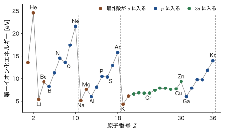
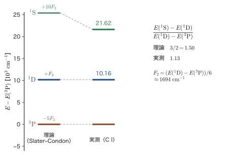
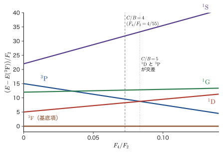
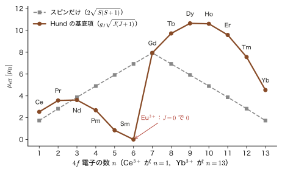

第34章多電子原子 — 電子配置・項記号・Hund の規則
周期表はなぜ「2，8，8，18，18，32，32」という長さで繰り返されるのだろうか．炭素の基底状態はなぜ 2 個の 2p 電子のスピンが平行にそろった状態なのか．$\mathrm{Fe^{3+}}$ の 5 個の 3d 電子はなぜスピンがそろって大きな磁気モーメントをもち，希土類のネオジムを混ぜた結晶はなぜ 1064 nm の赤外線レーザー光を出すのか．これらはすべて，複数の電子を原子の軌道にどう詰めるかという同じ問題の答えである．水素原子（第15〜17章）は電子が 1 個なので Schrödinger（シュレーディンガー）方程式が厳密に解けたが，電子が 2 個以上になると電子間の Coulomb 反発 $1/r_{12}$ が入って厳密には解けない．ヘリウムでは，この反発を摂動論（第29章）や変分法（第31章）で近似した．この章では，同じ考え方を電子が何個ある原子にも使える形に整える．
見通しの中心になるのは，原子の電子状態を配置 → 項 → 準位の 3 階層で考えることである（図34.3）．(1) まず，個々の電子が原子核と他の電子の平均の電場の中を動くと考えて，軌道 $1s,2s,2p,\dots$ に電子を詰める（電子配置．エネルギーの尺度は数 eV〜数十 eV）．(2) 同じ配置の中でも，電子間反発の細かい部分が，電子どうしの向きの関係（軌道角運動量 $L$ とスピン $S$）によってエネルギーを分ける（項 ${}^{2S+1}L$．尺度は約 0.1〜数 eV）．(3) 最後に，スピン軌道相互作用が全角運動量 $J$ によって項をさらに細かく分ける（準位 ${}^{2S+1}L_J$．尺度は $10^{-3}$〜$10^{-1}$ eV）．それぞれの階層を決める規則が，Madelung（マーデルング）の規則，Slater–Condon の規則，Landé（ランデ）の間隔則で，最も低い項を決めるのが Hund（フント）の規則である．古典物理には，スピンや Pauli の排他原理に対応するものがないので，これらの規則の根本は量子力学にしかない．一方，「同じ向きに回る電子どうしは互いに避け合う」のような直観は，古典的な描像に近い言葉で語ることができる．
この章の内容は，材料科学のほとんどの場面の出発点になる．遷移金属イオンの色，磁性，触媒作用，電池材料の性質は 3d 電子の項の性質で決まり，Nd–Fe–B 磁石やレーザー結晶，蛍光体の性質は希土類イオンの 4f 電子の項の性質で決まる．次の第35章の Hartree–Fock 近似では，この章で数え上げた項のエネルギーを 2 種類の積分（Coulomb 積分 $U_{ab}$ と交換積分 $J_{ab}$）で組み立てる．第VIII部の配位子場理論では，この章で定義する Racah（ラカー）パラメータ $B$，$C$ が田辺–菅野図の縦軸・横軸になる．
- 中心力場近似で多電子原子を「軌道に電子を詰める問題」に直し，Madelung の規則と周期表（2，8，8，18，18，32，32），Cr・Cu などの例外，第18章の Slater の規則による $Z^*$ の結果（Cu：4s が 3.70，3d が 7.85）を使った 4s・3d の議論，第一イオン化エネルギーの周期性を説明できること
- 全軌道角運動量 $\hat{\bm{L}}=\sum\hat{\bm{l}}_i$，全スピン $\hat{\bm{S}}=\sum\hat{\bm{s}}_i$，全角運動量 $\hat{\bm{J}}=\hat{\bm{L}}+\hat{\bm{S}}$ と，LS 結合・項記号 ${}^{2S+1}L_J$ を理解すること（$J$ は交換積分 $J_{ab}$ とは別物）
- 微視的状態を数え（p$^2$：15，d$^2$：45，d$^3$：120，d$^5$：252），$M_L$–$M_S$ 表から項に分解できること
- スピン軌道相互作用による $J$ への分裂 $\lambda\hat{\bm{L}}\cdot\hat{\bm{S}}$ と Landé の間隔則 $E(J)-E(J-1)=\lambda J$，$\lambda=\pm\zeta/2S$ を導くこと
- 電子間反発を Slater 積分 $F^k$ で表し，p$^2$ の項エネルギー（$-5,1,10$ の比）と d$^2$ の項エネルギーを Racah パラメータ $A,B,C$ で表すこと
- Hund の 3 規則と基底項の一覧（3d 電子：d$^1$〜d$^9$，希土類イオン：4f$^1$〜4f$^{13}$）を，物理的な理由とともに理解すること
- Landé の $g_J$ と有効磁気モーメント $\mu_{\mathrm{eff}}$ を計算し，3d イオン・希土類イオンの磁性，Nd–Fe–B 磁石，Nd:YAG レーザーへ応用すること
もとにしたノート：本章はノートにない内容を補った章である．関連するノート：望月泰英『物理学ノート 量子力学2』 pp. 53–60，『量子力学3』 pp. 11–18，pp. 50–56．
34.1 中心力場近似と電子配置 — 構成原理と周期表
34.1.1 多電子原子のハミルトニアン
原子番号 $Z$ の原子核（電荷 $+Ze_0$）のまわりに，$N$ 個の電子がある原子を考える．本書では電気素量を $e_0$ と書く（AD 03 の $e$ と同じ量）．前章（第33章 33.1 節）で導入した原子単位（$\hbar=m_{\mathrm e}=e_0=4\pi\varepsilon_0=1$．長さの単位は Bohr 半径 $a_0$，エネルギーの単位は Hartree エネルギー $E_{\mathrm h}=27.211\,386\ \mathrm{eV}$）を使い，原子核は動かないとみなす（Born–Oppenheimer 近似）．するとハミルトニアンは
\begin{equation} \hat{H}=\sum_{i=1}^{N}\Bigl(-\frac12\nabla_i^2-\frac{Z}{r_i}\Bigr)+\sum_{i\lt j}\frac{1}{r_{ij}}\ ,\qquad r_{ij}=\abs{\bm{r}_i-\bm{r}_j} \label{eq:34-H} \end{equation}である．SI 単位では，第 1 項は $-\dfrac{\hbar^2}{2m_{\mathrm e}}\nabla_i^2-\dfrac{Ze_0^2}{4\pi\varepsilon_0r_i}$，第 2 項は $\dfrac{e_0^2}{4\pi\varepsilon_0r_{ij}}$ になる．第 1 項は「運動エネルギー＋原子核との引力」で，電子ごとに別々の水素様原子（第18章）のハミルトニアンである．第 2 項は電子 2 個ずつの組すべてについての反発エネルギーで，$N(N-1)/2$ 個ある（Fe なら $26\times25/2=325$ 個）．この 2 電子項があるために，電子 $i$ の座標 $\bm{r}_i$ と電子 $j$ の座標 $\bm{r}_j$ が絡み合い，変数分離ができない．ヘリウム（$N=2$）でさえ厳密解は初等関数では書けなかった（第29章・第31章）．したがって，近似が必要である．
34.1.2 中心力場近似 — 「各電子は平均の電場の中を動く」
反発の項 $1/r_{ij}$ をそのまま扱う代わりに，電子 $i$ が，原子核と他の電子たちがつくる平均の電場の中を 1 個だけで動いている，と考える．他の電子の平均の電荷分布は，原子の全体としてほぼ球対称なので，平均の電場は原子核を中心とする中心力になる．
定義34.1 中心力場近似
各電子が感じるポテンシャルを，原子核のまわりの球対称な関数 $V(r)=-Z/r+u(r)$ で表す．$u(r)$ は他の電子がつくる球対称な平均のポテンシャル（遮蔽の効果を表す）である．すると，ハミルトニアン \eqref{eq:34-H} は
\begin{equation} \hat{H}=\hat{H}_0+\hat{V}_{\mathrm{res}}\ ,\qquad \hat{H}_0=\sum_{i=1}^{N}\Bigl[-\frac12\nabla_i^2+V(r_i)\Bigr]\ ,\qquad \hat{V}_{\mathrm{res}}=\sum_{i\lt j}\frac{1}{r_{ij}}-\sum_{i=1}^{N}u(r_i) \label{eq:34-central} \end{equation}と分けられる．$\hat{H}_0$ を無摂動のハミルトニアンとし，残りの $\hat{V}_{\mathrm{res}}$（残留静電相互作用）は小さいとして摂動で扱う．
この分け方は，第29章で He を $\hat{H}_0+\lambda\hat{V}$ に分けたのと同じ考え方である．違いは，第29章では $\hat{H}_0$ に核の引力だけを入れて $1/r_{12}$ を全部摂動にしたのに対し，ここでは遮蔽を $u(r)$ として $\hat{H}_0$ に取り込んでおき，摂動になるのは「平均からのずれ」だけにする点である．$u(r)$ の具体的な形は Hartree の自己無撞着場の方法で決める（第35〜37章の Hartree–Fock 法の原子への適用がその完成形である）．この章では，$u(r)$ の詳しい形には立ち入らず，中心力であることだけを使う．$V(r)$ は，核のごく近くでは $-Z/r$（遮蔽されない），核から遠くでは $-(Z-N+1)/r$（中性原子では $-1/r$．外側の電子から見ると，核と他の $N-1$ 個の電子がほぼ打ち消し合う）という形をとる．
$\hat{H}_0$ は電子ごとの 1 電子ハミルトニアン $\hat{h}=-\tfrac12\nabla^2+V(r)$ の和なので，変数分離できる．$V(r)$ は中心力だから，$\hat{h}$ の固有関数は水素様原子と同じく（第14章）
\begin{equation} \psi_{nlm}(\bm{r})=R_{nl}(r)\,Y_l^{m}(\theta,\varphi)\ ,\qquad \hat{h}\,\psi_{nlm}=\varepsilon_{nl}\,\psi_{nlm} \label{eq:34-orb} \end{equation}と書ける．動径関数 $R_{nl}$ は $V(r)$ で決まる．注意すべきことが 2 つある．(1) 軌道エネルギー $\varepsilon_{nl}$ は，中心力なら磁気量子数 $m$ には依らないが，$V(r)$ が $-1/r$ の形（Coulomb 型）ではないので，水素のような「$n$ だけで決まる」縮退は成り立たない．$l$ にも依る．(2) 電子にはスピンがあるので，1 電子の状態は空間軌道 $\psi_{nlm}$ とスピン関数（$\alpha=\ket{\uparrow}$，$\beta=\ket{\downarrow}$）の積 $\chi=\psi_{nlm}\,\alpha$ または $\psi_{nlm}\,\beta$ のスピン軌道である（第33章）．$N$ 個のスピン軌道で作った Slater 行列式は，$\hat{H}_0$ の固有関数で，固有値は軌道エネルギーの和 $\sum\varepsilon_{n_il_i}$ である．
イメージ：$l$ の縮退が解ける理由は「浸透」
水素では，$2s$ と $2p$ のエネルギーは同じだった（$-13.6\ \mathrm{eV}/4$）．ところが多電子原子では $\varepsilon_{2s}\lt\varepsilon_{2p}$ になる．$2s$ 軌道は核の近くまで入り込む（浸透）ので，内側の電子による遮蔽を受けにくく，有効核電荷が大きい．$2p$ は核から少し離れた位置に山があるので，内側の電子に遮蔽されて有効核電荷が小さい．同じ $n$ なら，浸透の大きい順（$s\gt p\gt d\gt f$）にエネルギーが低い：$\varepsilon_{ns}\lt\varepsilon_{np}\lt\varepsilon_{nd}\lt\varepsilon_{nf}$．遮蔽と浸透の詳しい議論は第18章 18.2 節と18.3 節にある．
関連シミュレーター：水素原子（軌道の形と動径分布関数）
ここで電子配置（electron configuration）を定義しておく．どの副殻 $nl$ に何個の電子を入れるかを $1s^22s^22p^2$（炭素）のように書いたものである．$\hat{H}_0$ のもとでは，同じ配置のすべての状態が縮退している．配置は，原子の電子状態の最も粗い分類である．
注意：軌道エネルギーの和は原子の全エネルギーではない
$\sum_i\varepsilon_{n_il_i}$ は，電子 $i$ が感じる平均反発 $u(r_i)$ を電子 $i$ のエネルギーにも，電子 $j$ のエネルギーにも数えるので，電子間反発を二重に数えている．原子の全エネルギーは $\sum\varepsilon$ ではない．この二重計算の補正は，Hartree–Fock 法のエネルギー（第35章）で扱う．
34.1.3 Pauli の排他原理と副殻の収容数
Pauli の排他原理は，第33章で見たとおり，多電子波動関数が電子の入れ替えについて反対称であること，したがって同じスピン軌道に 2 個の電子は入れないことと同じである．スピン軌道は $(n,l,m,m_s)$ の組で指定されるから，副殻 $nl$ には，$m=-l,\dots,l$ の $2l+1$ 個の空間軌道のそれぞれに上向き・下向きの 2 個，合計 $2(2l+1)$ 個の電子が入れる．主量子数 $n$ の殻（$l=0,1,\dots,n-1$）の収容数は
\begin{equation} \sum_{l=0}^{n-1}2(2l+1)=2\cdot n^2=2n^2 \label{eq:34-shell} \end{equation}である（$\sum_{l=0}^{n-1}(2l+1)=n^2$ は等差数列の和）．
| 副殻 | $s$ | $p$ | $d$ | $f$ | 殻の収容数 $2n^2$ |
|---|---|---|---|---|---|
| $l$ | 0 | 1 | 2 | 3 | $n=1,2,3,4$ で 2，8，18，32 |
| 空間軌道の数 $2l+1$ | 1 | 3 | 5 | 7 | |
| 収容数 $2(2l+1)$ | 2 | 6 | 10 | 14 |
この $2n^2$（2，8，18，32）は，周期表の周期の長さ 2，8，8，18，18，32，32 と関係しているが，一致はしていない．たとえば第 3 周期は 8 個で，$n=3$ 殻の 18 個ではない．次項で見るように，これは軌道エネルギーの順序が $n$ だけでは決まらないためである．
34.1.4 構成原理と Madelung の規則
基底状態の電子配置は，Pauli の排他原理を守りながら，エネルギーの低い軌道から順に電子を詰めていくことで決まる．これを構成原理（Aufbau principle）という．詰める順序は，軌道エネルギー $\varepsilon_{nl}$ の順序だが，$\varepsilon_{nl}$ は原子ごとに少しずつ違う．ところが，中性原子の基底配置については，次の簡単な経験則がほとんどの元素でよく成り立つ．
法則34.1 Madelung の規則
副殻を，(1) $n+l$ の値の小さい順に，(2) $n+l$ が同じときは $n$ の小さい順に並べ，この順に電子を詰める．
\begin{equation} 1s\to2s\to2p\to3s\to3p\to4s\to3d\to4p\to5s\to4d\to5p\to6s\to4f\to5d\to6p\to7s\to5f\to6d\to7p\to\cdots \label{eq:34-madelung} \end{equation}この経験則は「$n+l$ の規則」ともよばれ，Madelung と Klechkowski の名をとって Madelung–Klechkowski の規則ともよばれる．理論から厳密に導かれた法則ではなく，多数の元素の実測から得られた規則である．例えば $4s$（$n+l=4$）が $3d$（$n+l=5$）より先に，$5s$（$n+l=5$，$n=5$）が $4d$（$n+l=6$）より先に埋まる，という事実を再現する．同じ $n+l$ の群の電子数は $2,2,8,8,18,18,32,32$ で（図34.1 の右の欄），2 番目の群から数えると，周期表の周期の長さ $2,8,8,18,18,32,32$ と同じ並びになる．ただし，群の切れ目は，周期の切れ目（希ガス）より 2 個ぶん先の $ns^2$（Be，Mg，Ca，Sr，Ba，Ra）にあたる．
例題34.1 Madelung の規則による基底配置
Fe（$Z=26$），As（$Z=33$），Zr（$Z=40$）の基底配置を，Madelung の規則で決めよ．また，同じ規則を Gd（$Z=64$）に当てはめたときの結果と，実測の配置を比べよ．
解答 式 \eqref{eq:34-madelung} の順に，収容数（$s$：2，$p$：6，$d$：10，$f$：14）を引きながら詰める．累計は $1s^2$（2），$2s^2$（4），$2p^6$（10），$3s^2$（12），$3p^6$（18），$4s^2$（20），$3d^{10}$（30），$4p^6$（36），$5s^2$（38），$4d^{10}$（48），$5p^6$（54），$6s^2$（56），$4f^{14}$（70），…となる．
Fe：$26-18=8$ 個が [Ar] の外側にある．$4s^2$（20 まで），残り $26-20=6$ 個が $3d$ に入る：$[\mathrm{Ar}]3d^64s^2$．
As：$33-18=15$ 個．$4s^2$（2 個），$3d^{10}$（10 個），$4p$ に残り $3$ 個：$[\mathrm{Ar}]3d^{10}4s^24p^3$．
Zr：$40-36=4$ 個が [Kr] の外側．$5s^2$（38 まで），$4d$ に残り $2$ 個：$[\mathrm{Kr}]4d^25s^2$．
Gd：$[\mathrm{Xe}]$（54 個）＋ $6s^2$（56）＋ $4f$ に $64-56=8$ 個で，規則どおりなら $[\mathrm{Xe}]4f^86s^2$ になる．実測は $[\mathrm{Xe}]4f^75d^16s^2$ で，$4f$ が半分（7 個）で止まり，1 個が $5d$ に入る．規則は「ほとんどの元素で成り立つ」経験則であり，Gd は例外の 1 つである（次項）．
表34.2 は，$Z=1$〜$36$ の原子の基底配置と基底項（項記号は次節・34.6 節で説明する）である．
| $Z$ | 元素 | 基底配置 | 基底項 | $Z$ | 元素 | 基底配置 | 基底項 |
|---|---|---|---|---|---|---|---|
| 1 | H | 1s | 2S1/2 | 19 | K | [Ar]4s | 2S1/2 |
| 2 | He | 1s2 | 1S0 | 20 | Ca | [Ar]4s2 | 1S0 |
| 3 | Li | [He]2s | 2S1/2 | 21 | Sc | [Ar]3d4s2 | 2D3/2 |
| 4 | Be | [He]2s2 | 1S0 | 22 | Ti | [Ar]3d24s2 | 3F2 |
| 5 | B | [He]2s22p | 2P1/2 | 23 | V | [Ar]3d34s2 | 4F3/2 |
| 6 | C | [He]2s22p2 | 3P0 | 24 | Cr | [Ar]3d54s | 7S3 |
| 7 | N | [He]2s22p3 | 4S3/2 | 25 | Mn | [Ar]3d54s2 | 6S5/2 |
| 8 | O | [He]2s22p4 | 3P2 | 26 | Fe | [Ar]3d64s2 | 5D4 |
| 9 | F | [He]2s22p5 | 2P3/2 | 27 | Co | [Ar]3d74s2 | 4F9/2 |
| 10 | Ne | [He]2s22p6 | 1S0 | 28 | Ni | [Ar]3d84s2 | 3F4 |
| 11 | Na | [Ne]3s | 2S1/2 | 29 | Cu | [Ar]3d104s | 2S1/2 |
| 12 | Mg | [Ne]3s2 | 1S0 | 30 | Zn | [Ar]3d104s2 | 1S0 |
| 13 | Al | [Ne]3s23p | 2P1/2 | 31 | Ga | [Ar]3d104s24p | 2P1/2 |
| 14 | Si | [Ne]3s23p2 | 3P0 | 32 | Ge | [Ar]3d104s24p2 | 3P0 |
| 15 | P | [Ne]3s23p3 | 4S3/2 | 33 | As | [Ar]3d104s24p3 | 4S3/2 |
| 16 | S | [Ne]3s23p4 | 3P2 | 34 | Se | [Ar]3d104s24p4 | 3P2 |
| 17 | Cl | [Ne]3s23p5 | 2P3/2 | 35 | Br | [Ar]3d104s24p5 | 2P3/2 |
| 18 | Ar | [Ne]3s23p6 | 1S0 | 36 | Kr | [Ar]3d104s24p6 | 1S0 |
注意：Madelung の規則は「軌道エネルギーの順序」ではない
電子を詰める順序（$4s$ が $3d$ より先）と，軌道エネルギーの順序を混同してはいけない．Sc 以降の遷移金属では，軌道エネルギーは $3d$ の方が低い（第18章 18.5 節）．それでも中性原子の基底配置が $3d^n4s^2$ になるのは，$3d$ 電子どうしの反発が強い（3d は核の近くに密集している）ため，全エネルギーでは $4s$ に電子を置く方が得になる場合があるからである．Madelung の規則は，基底状態の全エネルギーを最小にする配置を経験的にまとめたものである．
34.1.5 例外 — Cr と Cu，そして 4d・5d・4f の元素
表34.2 の Cr と Cu は，Madelung の規則の予想（$3d^44s^2$，$3d^94s^2$）と違い，$3d^54s^1$，$3d^{10}4s^1$ である．そのほか，Nb（$4d^45s^1$），Mo（$4d^55s^1$），Ru（$4d^75s^1$），Rh（$4d^85s^1$），Pd（$4d^{10}$，$5s$ は空），Ag（$4d^{10}5s^1$），La（$5d^16s^2$），Ce（$4f^15d^16s^2$），Gd（$4f^75d^16s^2$），Pt（$5d^96s^1$），Au（$5d^{10}6s^1$）などがある．
例外が出る理由は，$nd$（または $4f$）と $(n+1)s$ の軌道エネルギーが近く，わずかなエネルギーの差で入れ替わりうることである．たとえば Cr では，$3d^44s^2$ 配置の最低の項は，$3d^54s^1$ の基底項から約 1 eV しか高くない．そこへ，次の 2 つの効果が働く．
- 交換エネルギー：スピンが平行な電子の対が多いほど，Fermi 孔（第33章 33.6 節，第29章 29.5 節）により反発が減る．半分詰まった $d^5$（5 個の電子のスピンがすべて平行）や，詰まった $d^{10}$ で，平行対が多い．
- $4s^2$ の電子対の反発を避けられること．
平行スピンの対の数を数える簡単な「会計」を，次の例題で示す．なお，これは例外の理由の目安であって，正確なエネルギーの計算ではない．Ni（$3d^84s^2$）と Cu のように隣り合う元素で結果が違うのは，こうした小さいエネルギーの競合の結果である．
例題34.2 平行スピン対の数え上げ — Cr，Cu の例外と N，O
(1) Cr の $3d^54s^1$ と $3d^44s^2$ について，$3d$–$3d$ の平行スピン対の数を比べよ．同様に，Cu の $3d^{10}4s^1$ と $3d^94s^2$ を比べよ．(2) 2p$^3$（N）と 2p$^4$（O）について，平行スピン対の数を数え，N$\to$N$^+$ と O$\to$O$^+$ でどちらが交換エネルギーを多く失うかを述べよ．ただし Hund の規則にならい，スピンを平行にそろえられるだけそろえる．
解答 $n_\uparrow$ 個のスピンが平行な電子から 2 個を選ぶ組の数は $\binom{n_\uparrow}{2}=n_\uparrow(n_\uparrow-1)/2$ である．
(1) Cr：$3d^5$ は上向き 5 個で $\binom52=10$ 対．$3d^4$ は上向き 4 個で $\binom42=6$ 対．差は $4$ 対．Cu：$3d^{10}$ は上向き 5 個・下向き 5 個で $10+10=20$ 対，$3d^9$ は上向き 5 個・下向き 4 個で $10+6=16$ 対．差は同じく $4$ 対．どちらの例外でも，$4s$ から $3d$ に電子を 1 個移すと，$3d$–$3d$ の平行スピン対が 4 個増える．$3d$ 軌道は小さく，$3d$ 電子どうしの交換積分 $J$ が大きい（$4s$–$3d$ より大きい）ので，この増加が，$4s\to3d$ の昇位に必要なエネルギー（小さい）を上回るのである．
(2) N（$2p^3$）は 3 個が上向きで $\binom32=3$ 対．N$^+$（$2p^2$）は $\binom22=1$ 対．N は 2 対を失う．O（$2p^4$）は上向き 3 個・下向き 1 個で $\binom32+\binom12=3+0=3$ 対．O$^+$（$2p^3$）は 3 対．O は平行対を 1 つも失わない．さらに O では，1 つの $p$ 軌道に電子が 2 個入っている（電子対）ので，同じ軌道内の反発（後の式で $U_{aa}$ と書く量）があり，イオン化でこの余分な反発がなくなる．したがって N は O より，イオン化で交換エネルギーを 2 対分失い，イオン化エネルギーが大きくなる方向に働く．これが N（14.53 eV）＞ O（13.62 eV）の原因の 1 つである（34.5 節でこの見積りを定量化する）．
34.1.6 第18章の $Z^*$ で見る 4s と 3d
遮蔽を足し算で見積もる Slater の規則は，第18章 18.4 節 法則18.1に述べた（計算例は例題18.8．4s と 3d の順序の議論は18.5.3 節）．本節では，その結論だけを使う．すなわち，$3d$ 電子は原子の内側にあって有効核電荷が大きく（Fe：$3d$ が $6.25$，$4s$ が $3.75$．Cu：$3d$ が $7.85$，$4s$ が $3.70$），$4s$ 電子が原子の外縁をつくる．この $Z^*$ を，電子配置の議論につなげよう．
例題34.3 Cu の基底配置と Cu$^+$ — $Z^*$ と平行スピン対をあわせて
例題18.8 の Cu の $Z^*$（$3d$：$7.85$，$4s$：$3.70$）と，有効主量子数 $n^*$（$3d$：$3$，$4s$：$3.7$）から，水素様の式 $E\approx-13.606\ \mathrm{eV}\times(Z^*/n^*)^2$ で $3d$，$4s$ の軌道エネルギーを見積もれ．その結果と例題34.2 の平行スピン対の数え上げを使って，(1) Cu$^+$ の配置が $3d^{10}$ である理由，(2) 中性の Cu の基底配置が，Madelung の規則の予想 $3d^94s^2$ ではなく $3d^{10}4s^1$ である理由を述べよ．
解答 $3d$：$(7.85/3)^2=6.847$ より $E_{3d}\approx-13.606\times6.847=-93.2\ \mathrm{eV}$．$4s$：$(3.70/3.7)^2=1.000$ より $E_{4s}\approx-13.6\ \mathrm{eV}$．$3d$ の方がはるかに深い．ただし，この値は $Z^*$ の違いを比べるための粗い目安であり，実際の束縛エネルギーではない（Cu の第一イオン化エネルギーは $7.73\ \mathrm{eV}$）．
(1) 軌道エネルギーは $3d\ll4s$ で，$4s$ 電子の方が外側にあり，浅い．したがって中性の Cu から電子を 1 個取り去るときは $4s$ が先に抜け，Cu$^+$ は $3d^{10}$ になる（さらに，$3d^{10}$ は閉殻で安定である）．遷移金属のイオンを「$3d^n$」で語ってよいのは，このためである．Fe も同様で，$\mathrm{Fe^{2+}}$ は $3d^6$，$\mathrm{Fe^{3+}}$ は $3d^5$ である．
(2) 基底配置を決めるのは軌道エネルギーの大小ではなく，全エネルギーである（34.1.4 節の注意）．例題34.2 で見たとおり，$4s$ から $3d$ へ電子を 1 個移して $3d^94s^2\to3d^{10}4s^1$ にすると，$3d$–$3d$ の平行スピン対が $16$ から $20$ に，$4$ 対増える．しかも $4s^2$ の電子対の反発がなくなる．$3d$ 軌道は小さく（例題18.8 の $Z^*=7.85$ が大きいことに対応する），$3d$ 電子どうしの交換積分が大きいので，この利得が，$3d^94s^2$ からの昇位に必要な小さいエネルギーを上回る．実測でも，Cu の $3d^94s^2$ 配置の最低の項 ${}^2\mathrm{D}_{5/2}$ は，基底項 ${}^2\mathrm{S}_{1/2}$（$3d^{10}4s^1$）の約 $1.4\ \mathrm{eV}$（$11\,203\ \mathrm{cm^{-1}}$）上にある（NIST）．ただし，これは理由の目安であって，全エネルギーの計算ではない．
遷移金属のイオンで $4s$ が先に失われるのは，上の $Z^*$ の見積りからもわかるが，さらに，イオンでは電子が減って $3d$ 電子どうしの反発が弱まり，$3d$ 軌道が収縮して深くなるので，$3d^n$ 配置が最低になる（$\mathrm{Fe^{+}}$ の基底配置は $3d^64s^1$，$\mathrm{Fe^{2+}}$ は $3d^6$）．同様に $\mathrm{Cu^+}$：$3d^{10}$，$\mathrm{Cu^{2+}}$：$3d^9$，$\mathrm{Zn^{2+}}$：$3d^{10}$ である．$Z^*$ が原子番号とともに増える様子は図18.8にある．第VIII部の配位子場理論は，この $3d^n$ 配置から始まる．
34.1.7 第一イオン化エネルギーの周期性
基底状態の原子から，最も浅い電子を 1 個取り去るのに要するエネルギーが第一イオン化エネルギーである．図34.2 は $Z=1$〜$36$ の実測値（NIST）である．周期表の同じ族の性質が並ぶだけでなく，周期の中に規則的な凹凸がある．

凹凸の理由を，これまでの道具で説明できる．
- 周期の中の大局的な増加，希ガスで最大・アルカリ金属で最小．同じ殻に電子が 1 個増えるごとに，核電荷が $+1$ 増え，同じ殻の他の電子による遮蔽は $0.35$ 程度しか増えないので，$Z^*$ が約 $0.65$ ずつ増え（第18章 18.4.4 節），軌道が縮んで束縛が強くなる．殻が閉じた希ガスの次の元素（Li，Na，K）は，最外殻の電子 1 個が，内側の閉殻（$Z^*$ をほぼ 1 にまで遮蔽する）の外側に新しい殻で入るので，最も浅い（Li：$5.39\ \mathrm{eV}$，Na：$5.14\ \mathrm{eV}$，K：$4.34\ \mathrm{eV}$）．He（$24.59\ \mathrm{eV}$）が最大なのは，$1s$ 電子が内殻による遮蔽を受けず，$Z^*\approx1.7$ を感じるからである．
- Be$\to$B の減少（$9.32\to8.30\ \mathrm{eV}$）．B の最外殻電子は $2p$ で，$2s^2$ の内側に浸透しにくく（$\varepsilon_{2p}\gt\varepsilon_{2s}$），しかも $2s^2$ に遮蔽される．そのため，核電荷が 1 つ増えても $2p$ 電子は Be の $2s$ 電子より浅い．Mg$\to$Al（$7.65\to5.99\ \mathrm{eV}$），Zn$\to$Ga（$9.39\to6.00\ \mathrm{eV}$）も同じ理由である．
- N$\to$O の減少（$14.53\to13.62\ \mathrm{eV}$）．N は $2p^3$ で，3 個の電子が別々の軌道にスピンをそろえて入っている（Hund の規則．平行対 3 対）．O の 4 個目の電子は，すでに 1 個入った軌道に逆向きのスピンで入り，同じ軌道内の余分な反発を受ける．O からは，その電子を取ると，反発が減るだけで交換エネルギーは失わない．N$\to$N$^+$ では，平行対を 2 対失う（例題34.2）．そのため N の方が取れにくい．P$\to$S（$10.49\to10.36\ \mathrm{eV}$）も同じである．
- $3d$ 系列（Sc〜Cu）で $6.6\to7.9\ \mathrm{eV}$ とゆっくり変化する（Sc：$6.56$，Ti：$6.83$，V：$6.75$，Cr：$6.77$，Mn：$7.43$，Fe：$7.90$，Co：$7.88$，Ni：$7.64$，Cu：$7.73\ \mathrm{eV}$）．電子が $4s$ の内側の $3d$ に入るので，$4s$ 電子の遮蔽が，$3d$ 電子 1 個あたり $0.85$ 増える（Slater の規則）．核電荷 $+1$ のうち $0.15$ しか $Z^*$ が増えない．そのため，$4s$ 電子の束縛の強さがほとんど変わらないのである．Zn（$3d^{10}4s^2$）は $3d$ と $4s$ がともに閉殻で，$9.39\ \mathrm{eV}$ と高い．
とくに N$\to$O の凹凸は，34.5 節で 2 電子積分 $F^2$ を使って定量的に見積もる（例題34.11）．
応用：イオン化エネルギーと材料の電気陰性度，電池電極
第一イオン化エネルギーが小さいアルカリ金属（Li，Na，K）は電子を手放しやすく，電池の負極（Li）や炎色反応の光源になる．イオン化エネルギーと電子親和力から求める電気陰性度（Mulliken）は，酸化物・ハロゲン化物の結合のイオン性を決める．遷移金属酸化物のバンドの中心の位置が Fe，Co，Ni，Mn の順にどう動くか，Li イオン電池の正極の電圧をどう見積もるか，という議論は，この 3d 電子のイオン化エネルギーの系列から出発する（固体の議論は AD 06 目次）．
34.2 電子状態の名前 — LS 結合と項記号 ${}^{2S+1}L_J$
34.2.1 電子配置だけでは足りない — 配置 → 項 → 準位
前節の電子配置は，原子の状態の最も粗い分類である．たとえば炭素の基底配置 $1s^22s^22p^2$ には，2 個の $2p$ 電子の入り方が何通りもあり（$2p$ 電子の 2 個の入れ方は 15 通り．34.3 節），それらは中心力場近似ではすべて同じエネルギーをもつ．しかし実際の炭素原子では，これらは 3 つの異なるエネルギーの組に分かれ，最も低い組はさらに 3 本に分かれている（図34.3）．この分裂を支配するのが，(1) 電子間の反発の平均からのずれ $\hat{V}_{\mathrm{res}}$（式 \eqref{eq:34-central}）と，(2) スピン軌道相互作用（第26章）である．
この 3 階層を，エネルギー尺度の大きな順に整理しよう．
- 電子配置（中心力場のエネルギー，数 eV〜数十 eV）：どの副殻に何個の電子があるか．
- 項（term，電子間反発による分裂，約 0.1〜数 eV）：全軌道角運動量 $L$ と全スピン $S$ で決まる．記号 ${}^{2S+1}L$．
- 準位（level，スピン軌道相互作用による分裂，$10^{-3}$〜$10^{-1}$ eV）：全角運動量 $J$ で決まる．記号 ${}^{2S+1}L_J$．
階層が分かれるのは，エネルギー尺度が大きく違うからである．大きい相互作用から順に，「その相互作用に対して保存する量」で状態を分類し，小さい相互作用は後から摂動で加えればよい（縮退のある摂動論．第28章）．
34.2.2 全軌道角運動量・全スピン — $L$ と $S$ は保存する
なぜ，個々の電子の $l_i,s_i$ ではなく，合成した $L,S$ が意味をもつのか．配置の中では，電子 $i$ の軌道角運動量 $\hat{\bm{l}}_i$ は中心力 $V(r_i)$ で保存する（第22章）．ところが，電子間反発 $1/r_{ij}$ は 2 電子の相対位置 $\bm{r}_i-\bm{r}_j$ で決まるので，電子 $i$ だけを回転させると変わってしまい，$\hat{\bm{l}}_i$ は保存しない．一方，すべての電子をいっしょに $z$ 軸のまわりに回転させても，$r_{ij}$ は変わらない．つまり，$\hat{V}_{\mathrm{res}}$ は，電子全体の回転で不変である．したがって，ハミルトニアンは次の演算子と可換になる．
\begin{equation} \hat{\bm{L}}=\sum_{i=1}^{N}\hat{\bm{l}}_i\ ,\qquad \hat{\bm{S}}=\sum_{i=1}^{N}\hat{\bm{s}}_i\ ,\qquad \hat{\bm{J}}=\hat{\bm{L}}+\hat{\bm{S}} \label{eq:34-LSJ} \end{equation}スピンには電子間反発が依らないので $\hat{\bm{S}}$ と可換であり，全体の回転で不変なので $\hat{\bm{L}}$ と可換である（$[\hat{H},\hat{\bm{L}}]=[\hat{H},\hat{\bm{S}}]=\bm{0}$）．異なる電子の演算子は互いに可換だから，合成した $\hat{\bm{L}}$，$\hat{\bm{S}}$ も 1 電子の角運動量と同じ交換関係（第25章）を満たし，$\hat{L}^2,\hat{L}_z,\hat{S}^2,\hat{S}_z$ の固有値は，$L(L+1)\hbar^2,M_L\hbar,S(S+1)\hbar^2,M_S\hbar$ で，$M_L=-L,\dots,L$，$M_S=-S,\dots,S$ である．
定義34.2 項（term）と LS 結合
電子間反発だけを考えたハミルトニアンの固有状態は，量子数 $(L,S)$ で分類され，同じ $(L,S)$ をもつ $(2L+1)(2S+1)$ 個の状態（$M_L,M_S$ の違い）は同じエネルギーをもつ．この縮退した状態の組を項といい，項記号
\begin{equation} {}^{2S+1}L\qquad(L=0,1,2,3,4,5,6,\dots\ \text{を}\ \mathrm{S,P,D,F,G,H,I,\dots}\ \text{と書く}) \label{eq:34-term} \end{equation}で表す．左上の $2S+1$ を多重度（multiplicity）という．スピン軌道相互作用を，この項の内部で摂動として考える近似を LS 結合（Russell–Saunders 結合）という．
大文字の $S,P,D,F,G,H,I$ は，1 電子の副殻の $s,p,d,f$（$l=0,1,2,3$）と同じ文字を大文字にしたものである．$L=7$ 以降の文字は $\mathrm{K,L,M,\dots}$ と続く（$\mathrm{J}$ は全角運動量 $J$ と紛らわしいので使わない）．$S=0,\tfrac12,1,\tfrac32,2,\dots$ に対する多重度 $2S+1=1,2,3,4,5,\dots$ を，一重項（singlet），二重項（doublet），三重項（triplet），四重項，五重項などとよぶ．
注意：全角運動量の $J$ と交換積分の $J_{ab}$ は別物
この章で使う $J$（大文字，添字なし）は全角運動量 $\hat{\bm{J}}=\hat{\bm{L}}+\hat{\bm{S}}$ の量子数である．一方，第29章・第35章の $J_{ab}$（添字が 2 つ）は交換積分（Coulomb 積分 $U_{ab}$ の仲間）で，エネルギーの次元をもつ数である．姉妹編（Szabo–Ostlund，AD 07）では，Coulomb 積分を $J$，交換積分を $K$ と書くので，そちらの $J$ とも意味が違う．文字は同じでも，添字の有無と文脈で区別すること．
34.2.3 LS 結合と jj 結合 — どちらが正しいかは原子による
LS 結合は，電子間反発の分裂がスピン軌道相互作用の分裂より大きいときに，よい近似である．スピン軌道相互作用は原子番号とともに急激に大きくなり（水素様原子では $Z^4$．第26章 26.2 節），重い原子では電子間反発と同程度以上になる．この極限では，先に各電子で $\hat{\bm{j}}_i=\hat{\bm{l}}_i+\hat{\bm{s}}_i$ をつくってから，それらを合成して $J$ をつくる方がよい．これを jj 結合という．実際の原子は，この 2 つの極限の中間にある．
| 原子 | 配置 | ${}^3\mathrm{P}$ の $J$ の分裂の幅 | ${}^1\mathrm{D}$ と ${}^3\mathrm{P}$ の間隔 | 比 |
|---|---|---|---|---|
| C | $2p^2$ | 43.4（$J=0\to2$） | 10 193 | 0.004 |
| O | $2p^4$ | 227.0（$J=2\to0$） | 15 868 | 0.014 |
| Pb | $6p^2$ | 10 650（$J=0\to2$） | 21 458 | 0.50 |
例題34.4 LS 結合がよい原子とよくない原子
表34.3 の 3 つの原子について，${}^3\mathrm{P}$ 準位の分裂の幅と ${}^1\mathrm{D}$ までの間隔の比を計算し，LS 結合がよい近似かどうか述べよ．さらに，LS 結合が成り立つなら，${}^3\mathrm{P}_0,{}^3\mathrm{P}_1,{}^3\mathrm{P}_2$ の間隔の比は $1:2$ になるはずだが，実測値（C：$0,16.4,43.4$；Pb：$0,7819,10650\ \mathrm{cm^{-1}}$）ではどうか．
解答 C：$43.4/10\,193=0.0043$．O：$227.0/15\,868=0.0143$．Pb：$10\,650/21\,458=0.496$．C，O では，スピン軌道相互作用による分裂が項の間隔のわずか 0.4 %，1.4 % で，LS 結合は非常によい．Pb ではその比が約 50 % に達し，LS 結合は成り立たない（中間結合，むしろ jj 結合に近い）．
間隔の比（$J=1$ と $0$ の間隔に対する $J=2$ と $1$ の間隔）は，C では $(43.4-16.4)/16.4=27.0/16.4=1.64$，Pb では $(10\,650-7819)/7819=2831/7819=0.36$ である．LS 結合の予想（次節の Landé の間隔則）は $2$ である．C は予想に近い（1.64．残りは，${}^3\mathrm{P}_2$ と同じ $J=2$ をもつ ${}^1\mathrm{D}_2$ とのわずかな混合による）が，Pb は予想から大きく外れる．重い原子では，LS 結合の項記号は，準位を分類する名前としての意味しかなくなる．
3d 遷移金属では，スピン軌道相互作用の結合定数 $\zeta_{3d}$ が数百 $\mathrm{cm^{-1}}$（0.02〜0.1 eV）で，項の間隔（$10^4\ \mathrm{cm^{-1}}$ 程度）より 1 桁以上小さいので，LS 結合がよく成り立つ．4f の希土類イオンでは $\zeta_{4f}\sim10^3\ \mathrm{cm^{-1}}$ と大きいが，項の間隔もそれ以上に大きく，LS 結合の項記号が今でもよく使われる（34.7 節）．この章では，LS 結合を使う．
34.2.4 項記号の読み方と $J$ の値
項 ${}^{2S+1}L$ の $(2L+1)(2S+1)$ 個の状態は，スピン軌道相互作用があると，$\hat{\bm{J}}=\hat{\bm{L}}+\hat{\bm{S}}$ の量子数 $J$ で分類される（第25章の角運動量の合成）．$J$ の取りうる値は
\begin{equation} J=\abs{L-S},\ \abs{L-S}+1,\ \dots,\ L+S \label{eq:34-Jvalues} \end{equation}で，$L\ge S$ のときは $2S+1$ 個（多重度と同じ数），$L\lt S$ のときは $2L+1$ 個である．各 $J$ 準位の縮重度は $2J+1$（$M_J=-J,\dots,J$）で，合計は $\sum_J(2J+1)=(2L+1)(2S+1)$ となる．準位を含めた記号 ${}^{2S+1}L_J$ を使う．例えば ${}^3\mathrm{P}_2$ は「三重項 P の $J=2$」と読む．
例題34.5 項の $J$ 準位と縮重度
(1) ${}^3\mathrm{F}$ の $J$ の値と各準位の縮重度を求め，合計が $(2L+1)(2S+1)$ になることを確かめよ．(2) ${}^4\mathrm{D}$ について同様にせよ．(3) ${}^6\mathrm{S}$（$\mathrm{Mn^{2+}}$，$\mathrm{Fe^{3+}}$ の基底項）の $J$ は何個か．
解答 (1) ${}^3\mathrm{F}$ は $S=1$，$L=3$．$J=|3-1|,\dots,3+1=2,3,4$．縮重度は $2J+1=5,7,9$．合計 $5+7+9=21=(2\cdot3+1)(2\cdot1+1)=7\times3$．(2) ${}^4\mathrm{D}$ は $S=\tfrac32$，$L=2$．$J=\tfrac12,\tfrac32,\tfrac52,\tfrac72$．縮重度 $2,4,6,8$．合計 $20=5\times4$．(3) ${}^6\mathrm{S}$ は $S=\tfrac52$，$L=0$．$L\lt S$ なので $J=\abs{0-\tfrac52},\dots,0+\tfrac52$ は $J=\tfrac52$ の 1 個だけ．縮重度は $2J+1=6=(2\cdot0+1)(2\cdot\tfrac52+1)$．${}^6\mathrm{S}_{5/2}$ という 1 本の準位で，スピン軌道相互作用による分裂は 1 次では起こらない．
もう 1 つ，項記号の右上に $\circ$ の印がついたものを見かける（窒素の基底項 ${}^4\mathrm{S}^\circ_{3/2}$ など）．これは電子配置のパリティ（反転 $\bm{r}\to-\bm{r}$ で波動関数が符号を変えるか）が奇であることを表し，$\sum_il_i$ が奇数のとき付ける．電気双極子遷移でパリティが変わらない遷移（同じ配置の中の遷移，たとえば d–d 遷移）は禁じられる（Laporte（ラポルテ）則．第VIII部第48章）．この章で扱う配置内の準位間の遷移は，そのような禁制遷移であり，寿命が長く吸収も弱い．
34.2.5 閉殻と空の殻 — 開殻だけを考えればよい
完全に詰まった副殻（閉殻）では，$m_l=-l,\dots,l$ の各軌道に上向き・下向きの電子が 1 個ずつ入るので，$M_L=\sum m_l=0$，$M_S=\sum m_s=0$ の状態が 1 つだけで，$L=0$，$S=0$ の ${}^1\mathrm{S}_0$ になる．したがって，閉殻の電子は項の分類に効かず，開殻（一部だけ詰まった副殻）の電子だけを考えればよい．炭素は $2p^2$，鉄イオン $\mathrm{Fe^{3+}}$ は $3d^5$，ネオジムイオン $\mathrm{Nd^{3+}}$ は $4f^3$ の項を考える．また，Ne，Ar，Zn，$\mathrm{Zn^{2+}}$ などの閉殻の原子・イオンの基底項はいつでも ${}^1\mathrm{S}_0$ である．同様に，1 個の電子の状態は，水素の ${}^2\mathrm{S}_{1/2}$（$1s$）や，$\mathrm{Ti^{3+}}$（$3d^1$）の ${}^2\mathrm{D}$ のように，$L=l$，$S=\tfrac12$ の項である．
姉妹編との関係
項記号の書き方は，姉妹編の「マテリアル計算科学（AD 05）」でも扱った（第7章 7.9 節）．そこでは炭素の $2p^2$ から出発して一重項・三重項を導いた．この章では，あらゆる配置に使える数え方（34.3 節）と，項のエネルギーの決め方（34.5 節）を加える．
34.3 微視的状態の数え上げ — $M_L$–$M_S$ 表
34.3.1 微視的状態 — 配置の中の「電子の入れ方」を数える
1 つの電子配置には，Pauli の排他原理を満たす電子の入れ方が何通りもある．電子は互いに区別できないので，「どの電子がどの軌道に入るか」ではなく，「どのスピン軌道が占有されているか」で入れ方を区別する．1 つの入れ方が 1 つの Slater 行列式（第33章）に対応する．
定義34.3 微視的状態
電子配置のもとで，占有するスピン軌道 $(m_l,m_s)$ の組の選び方 1 つ 1 つを微視的状態（microstate）という．副殻 $l$ の中に $N$ 個の電子がある配置（等価電子．同じ $nl$ に入っている電子）では，$2(2l+1)$ 個のスピン軌道から $N$ 個を選ぶ組合せの数だけ，
\begin{equation} \binom{2(2l+1)}{N}=\frac{[2(2l+1)]!}{N!\,[2(2l+1)-N]!} \label{eq:34-nmicro} \end{equation}がある．$\binom{n}{k}$ は「$n$ 個から $k$ 個を選ぶ組合せの数」である．異なる副殻（たとえば $2p$ と $3p$）に 1 個ずつある電子（非等価電子）は，別々の副殻に独立に入れるので，排他原理の制限がなく，副殻ごとの数の積になる．
数えてみよう．p 副殻には $2(2\cdot1+1)=6$ 個のスピン軌道がある．p$^2$ は $\binom62=15$ 通り，p$^3$ は $\binom63=20$ 通りである．d 副殻には 10 個のスピン軌道があり，d$^2$ は $\binom{10}{2}=45$，d$^3$ は $\binom{10}{3}=120$，d$^5$ は $\binom{10}{5}=252$ 通りである．非等価電子の $2p3p$ は $6\times6=36$，$3d4d$ は $10\times10=100$ 通りである（表34.4）．
| $N$ | 1 | 2 | 3 | 4 | 5 | 6 | 7 | 8 | 9 | 10 |
|---|---|---|---|---|---|---|---|---|---|---|
| p$^N$（$l=1$） | 6 | 15 | 20 | 15 | 6 | 1 | ||||
| d$^N$（$l=2$） | 10 | 45 | 120 | 210 | 252 | 210 | 120 | 45 | 10 | 1 |
個々の微視的状態（Slater 行列式）は，$\hat{L}_z$ と $\hat{S}_z$ の固有状態で，固有値は占有した軌道の和 $M_L=\sum m_l$，$M_S=\sum m_s$ である．しかし，$\hat{L}^2$ や $\hat{S}^2$ の固有状態ではないことがある（34.5 節）．そこで，まず $(M_L,M_S)$ の値だけで微視的状態を分類し，項に振り分けるという方法をとる．
34.3.2 $M_L$–$M_S$ 表 — 項の取り出し方
項 ${}^{2S+1}L$ は，$M_L=-L,\dots,L$ と $M_S=-S,\dots,S$ のすべての組み合わせに，状態をちょうど 1 個ずつ持つ．したがって，各 $(M_L,M_S)$ をもつ微視的状態の数 $N(M_L,M_S)$ は，各項が「$\abs{M_L}\le L$ かつ $\abs{M_S}\le S$ の長方形」に 1 個ずつ寄与した和になっている．この事実から，次の手順で項を取り出せる．
導出：$M_L$–$M_S$ 表から項を取り出す手順
[1] 配置の微視的状態をすべて書き出し，$(M_L,M_S)$ ごとに数を数えて表（$M_L$–$M_S$ 表）をつくる．
[2] 表の中で，最大の $M_S$ の行の，最大の $M_L$ を探す．これが，その項の $(L,S)$ である（最大の $M_S$ をもつ行の最大の $M_L$ には，それより大きい $L$，$S$ の項は寄与できず，$L=M_L$，$S=M_S$ の項だけが寄与するから）．
[3] 見つけた項の $(2L+1)(2S+1)$ 個の状態を表から引く（$\abs{M_L}\le L$，$\abs{M_S}\le S$ の長方形の各マスから 1 を引く）．
[4] 表が空になるまで [2]，[3] をくり返す．
（導出終わり）
公式34.1 項の数を直接求める式
$M_L$–$M_S$ 表の値 $N(M_L,M_S)$（$M_L,M_S\ge0$ の部分）から，項 $(L,S)$ が現れる回数は
\begin{equation} n(L,S)=N(L,S)-N(L+1,S)-N(L,S+1)+N(L+1,S+1) \label{eq:34-nterm} \end{equation}である．
導出は簡単である．$N(M_L,M_S)$ は，$L\ge M_L$ かつ $S\ge M_S$ の項の個数の和だから，右辺の 4 項の組み合わせ（差分）は，$L=M_L$ かつ $S=M_S$ の項だけを残す．たとえば，次の p$^2$ の表で $n(1,1)=N(1,1)-N(2,1)-N(1,2)+N(2,2)=1-0-0+0=1$（${}^3\mathrm{P}$ が 1 個）となる．手順 [1]〜[4] と結果は同じである．
34.3.3 p$^2$ の 15 状態 — ${}^3\mathrm{P}$，${}^1\mathrm{D}$，${}^1\mathrm{S}$
p 副殻の 6 個のスピン軌道は，$(m_l,m_s)=(+1,\uparrow),(0,\uparrow),(-1,\uparrow),(+1,\downarrow),(0,\downarrow),(-1,\downarrow)$ である．p$^2$ の 15 通りを $(M_L,M_S)$ で分類する．
- $M_S=+1$（2 個とも上向き）：異なる $m_l$ を 2 つ選ぶので，$(1,0)$，$(1,-1)$，$(0,-1)$ の 3 通りで，$M_L=1,0,-1$ が 1 個ずつ．
- $M_S=-1$（2 個とも下向き）：同様に $M_L=1,0,-1$ が 1 個ずつ．
- $M_S=0$（1 個が上向き，1 個が下向き）：上向きの $m_l$ と下向きの $m_l'$ は独立に 3 通りずつ選べる（同じ $m_l$ でもよい．スピンが違うから）ので $3\times3=9$ 通り．$M_L=m_l+m_l'$ は $2$（1 通り），$1$（2 通り），$0$（3 通り），$-1$（2 通り），$-2$（1 通り）．
この 15 通りの分類を表にしたのが図34.4 である．各マスの数字が微視的状態の数で，色がその状態の属する項を示す．
導出の手順を適用する．最大の $M_S=1$ の行で，最大の $M_L=1$ をもつ状態が見つかる：$(L,S)=(1,1)$，${}^3\mathrm{P}$．これは $M_L=1,0,-1$ と $M_S=1,0,-1$ の 9 個のマスから 1 個ずつを取る．残りは，$M_S=0$ の行の $M_L=2,1,0,-1,-2$ に $1,1,2,1,1$ 個．最大の $M_L=2$ から $(2,0)$，${}^1\mathrm{D}$（5 個）を取ると，残りは $M_L=M_S=0$ の 1 個だけで，$(0,0)$，${}^1\mathrm{S}$．合計 $9+5+1=15$ となり，過不足がない．
\begin{equation} \mathrm{p}^2\ :\ 15={}^3\mathrm{P}\,(9)+{}^1\mathrm{D}\,(5)+{}^1\mathrm{S}\,(1) \label{eq:34-p2terms} \end{equation}考察：なぜ ${}^3\mathrm{D}$ や ${}^1\mathrm{P}$ は現れないのか
p$^2$ の 2 個の電子が異なる軌道に入る非等価電子（$2p3p$）なら，$L=0,1,2$ と $S=0,1$ の 6 つの組み合わせ（${}^1\mathrm{S},{}^3\mathrm{S},{}^1\mathrm{P},{}^3\mathrm{P},{}^1\mathrm{D},{}^3\mathrm{D}$）がすべて現れ，合計は $1+3+3+9+5+15=36=6\times6$ 個になる（例題34.7）．等価電子の p$^2$ では，このうち ${}^3\mathrm{S},{}^1\mathrm{P},{}^3\mathrm{D}$ の 3 つが Pauli の排他原理で消える．理由は次のとおりである．2 個の電子が同じ副殻 $l$ にあるとき，2 電子の入れ替えに対して，空間波動関数（軌道角運動量 $L$ の合成）は $(-1)^{L}$，スピン波動関数は $S=1$（三重項）で対称（$+1$），$S=0$（一重項）で反対称（$-1$）なので $(-1)^{S+1}$ の符号をもつ．全体が反対称（$-1$）でなければならないから $(-1)^{L+S+1}=-1$，すなわち$L+S$ が偶数の項だけが残る．p$^2$ では $(L,S)=(1,1),(2,0),(0,0)$ が許され，$(0,1),(1,0),(2,1)$ は禁じられる．
34.3.4 d$^2$ の 45 状態
d 副殻では，$m_l=2,1,0,-1,-2$ の 5 軌道に上向き・下向きの 10 個のスピン軌道がある．d$^2$ の 45 通りを同じように数える．$M_S=+1$ は異なる $m_l$ を 2 つ選ぶ $\binom52=10$ 通りで，$M_L$ の分布は $M_L=3,2,1,0,-1,-2,-3$ に $1,1,2,2,2,1,1$ 個．$M_S=0$ は $5\times5=25$ 通りで，$M_L=4,3,\dots,-4$ に $1,2,3,4,5,4,3,2,1$ 個．$M_S=-1$ は $M_S=+1$ と同じである（図34.5）．
最大の $M_S=1$，最大の $M_L=3$ から ${}^3\mathrm{F}$（21 個）を取る．$M_S=1$ の行の残りは $M_L=1,0,-1$ に 1 個ずつで，${}^3\mathrm{P}$（9 個）．$M_S=0$ の行は，${}^3\mathrm{F}$ と ${}^3\mathrm{P}$ が $M_L=3,\dots,-3$ と $1,0,-1$ に 1 個ずつ寄与するので，残りは $M_L=4,\dots,-4$ に $1,1,2,2,3,2,2,1,1$ 個．最大の $M_L=4$ から ${}^1\mathrm{G}$（9 個）を取ると，$M_L=2,\dots,-2$ に $1,1,2,1,1$ 個が残り，${}^1\mathrm{D}$（5 個）を取ると，$M_L=0$ の 1 個が残り，${}^1\mathrm{S}$．
\begin{equation} \mathrm{d}^2\ :\ 45={}^3\mathrm{F}\,(21)+{}^3\mathrm{P}\,(9)+{}^1\mathrm{G}\,(9)+{}^1\mathrm{D}\,(5)+{}^1\mathrm{S}\,(1) \label{eq:34-d2terms} \end{equation}$L+S$ が偶数（${}^3\mathrm{F}$：$3+1$，${}^3\mathrm{P}$：$1+1$，${}^1\mathrm{G}$：$4+0$，${}^1\mathrm{D}$，${}^1\mathrm{S}$）であることが確かめられる．非等価電子の $3d4d$ なら $L=0,\dots,4$ と $S=0,1$ のすべての 10 個の項が現れ，合計は $100$ 状態である（例題34.7）．
34.3.5 d$^3$ の 120 状態と d$^5$ の 252 状態
電子が増えると手作業は大変になるが，手順は同じである．結果を表34.5 に示す．同じ $(L,S)$ が複数回現れる項（${}^2\mathrm{D}$ が d$^3$ で 2 回，d$^5$ で 3 回など）は，区別するために付加的な量子数を使う（たとえば seniority 数は，その項が，同じ副殻の電子を減らしていったときに初めて現れる電子数である．d$^3$ の ${}^2\mathrm{D}$ の 1 つは d$^1$ の ${}^2\mathrm{D}$ と同じ型で seniority 数 1，もう 1 つは d$^3$ で初めて現れ 3 である）．これら同じ $(L,S)$ の項は互いに混合するので，エネルギーは行列を対角化して求める（34.5.5 節）．ここでは単に「2 つある」と数える．
| 配置 | 状態数 | 項 |
|---|---|---|
| d$^1$，d$^9$ | 10 | ${}^2\mathrm{D}$（10） |
| d$^2$，d$^8$ | 45 | ${}^3\mathrm{F}$（21），${}^3\mathrm{P}$（9），${}^1\mathrm{G}$（9），${}^1\mathrm{D}$（5），${}^1\mathrm{S}$（1） |
| d$^3$，d$^7$ | 120 | ${}^4\mathrm{F}$（28），${}^4\mathrm{P}$（12），${}^2\mathrm{H}$（22），${}^2\mathrm{G}$（18），${}^2\mathrm{F}$（14），${}^2\mathrm{D}\times2$（$10\times2$），${}^2\mathrm{P}$（6） |
| d$^4$，d$^6$ | 210 | ${}^5\mathrm{D}$（25），${}^3\mathrm{H}$（33），${}^3\mathrm{G}$（27），${}^3\mathrm{F}\times2$（$21\times2$），${}^3\mathrm{D}$（15），${}^3\mathrm{P}\times2$（$9\times2$），${}^1\mathrm{I}$（13），${}^1\mathrm{G}\times2$（$9\times2$），${}^1\mathrm{F}$（7），${}^1\mathrm{D}\times2$（$5\times2$），${}^1\mathrm{S}\times2$（$1\times2$）（16 項） |
| d$^5$ | 252 | ${}^6\mathrm{S}$（6），${}^4\mathrm{G}$（36），${}^4\mathrm{F}$（28），${}^4\mathrm{D}$（20），${}^4\mathrm{P}$（12），${}^2\mathrm{I}$（26），${}^2\mathrm{H}$（22），${}^2\mathrm{G}\times2$（$18\times2$），${}^2\mathrm{F}\times2$（$14\times2$），${}^2\mathrm{D}\times3$（$10\times3$），${}^2\mathrm{P}$（6），${}^2\mathrm{S}$（2）（16 項） |
例題34.6 d$^5$ の高スピン項 ${}^6\mathrm{S}$ は 1 つだけ
d$^5$ 配置（$\mathrm{Mn^{2+}}$，$\mathrm{Fe^{3+}}$）について，(1) 最大の $M_S$ をもつ微視的状態は何個か，(2) $M_S=\tfrac32$ の状態は何個か，(3) (2) から ${}^6\mathrm{S}$ を除いた残りが，表34.5 の四重項 ${}^4\mathrm{G},{}^4\mathrm{F},{}^4\mathrm{D},{}^4\mathrm{P}$ の合計と一致することを確かめよ．
解答 (1) $M_S=\tfrac52$ は，5 個とも上向きで，5 つの軌道 $m_l=2,\dots,-2$ に 1 個ずつ入る 1 通りだけ．$M_L=2+1+0-1-2=0$ で，$(L,S)=(0,\tfrac52)$，すなわち ${}^6\mathrm{S}$ が 1 個．(2) $M_S=\tfrac32$ は上向き 4 個・下向き 1 個：上向きの軌道の選び方 $\binom54=5$ 通り，下向きの軌道 5 通りで $5\times5=25$ 通り．(3) ${}^6\mathrm{S}$ が 1 個を占めるので，残りは $25-1=24$ 個．四重項 ${}^4\mathrm{G},{}^4\mathrm{F},{}^4\mathrm{D},{}^4\mathrm{P}$ は，$M_S=\tfrac32$ の状態をそれぞれ $2L+1=9,7,5,3$ 個もち，合計 $9+7+5+3=24$ で一致する．d$^5$ の高スピン（スピンがすべて平行な）項が ${}^6\mathrm{S}$ 1 つだけであることは，Mn$^{2+}$・Fe$^{3+}$ の 3d 電子が軌道角運動量を持たない（$L=0$）ことを意味し，第VIII部で見る配位子場の影響を受けにくい理由になる．
34.3.6 電子とホール — d$^8$ は d$^2$ と同じ項をもつ
副殻に $N$ 個の電子があることは，$2(2l+1)-N$ 個の空きスピン軌道（ホール．正孔）があることと同じである．閉殻の $M_L,M_S$ は 0 なので，ホールの $(M_L,M_S)$ は，電子の $(M_L,M_S)$ の符号を変えたものに等しく，表は符号反転で対称だから，項の $(L,S)$ は電子とホールで同じになる．したがって，p$^4$ は p$^2$ と，d$^8$ は d$^2$ と，d$^7$ は d$^3$ と，d$^6$ は d$^4$ と同じ項をもつ（表34.4 の数が対称なのはそのためである）．電子とホールで同じなのは，項の $(L,S)$ と，電子間反発による項の間隔（34.5 節の Racah パラメータで書いた式）である．2 電子の反発の演算子をホールの演算子で書き直すと，ホールどうしの反発（電子どうしと同じ形）と，副殻全体に共通な定数だけになるからである．違うのは，スピン軌道相互作用の符号（副殻が半分未満なら $\lambda\gt0$，半分を超えると $\lambda\lt0$．34.4 節）と，配置全体のエネルギーの原点 $A$ だけである．基底準位の $J$ が電子とホールで変わる（34.6 節）のは，この $\lambda$ の符号のためである．
例題34.7 非等価電子と等価電子 — $2p3p$ と $2p^2$，d$^8$ の項
(1) $2p3p$ 配置の項と各状態数を求め，合計が 36 になることを確かめよ．(2) d$^8$ 配置（$\mathrm{Ni^{2+}}$）の項をすべて挙げ，状態数の合計が 45 になることを確かめよ．
解答 (1) $l_1=l_2=1$ の合成で $L=0,1,2$，$s_1=s_2=\tfrac12$ の合成で $S=0,1$．非等価なので排他原理の制限はなく，$3\times2=6$ 個の項が全部現れる：${}^1\mathrm{S}$（1），${}^3\mathrm{S}$（3），${}^1\mathrm{P}$（3），${}^3\mathrm{P}$（9），${}^1\mathrm{D}$（5），${}^3\mathrm{D}$（15）．合計 $1+3+3+9+5+15=36=6\times6$．等価電子の $2p^2$（15 個）に比べ，${}^3\mathrm{S},{}^1\mathrm{P},{}^3\mathrm{D}$ が余分にある．同様に $3d4d$ では $L=0,\dots,4$（$\sum(2L+1)=25$）と $S=0,1$（$1+3=4$）のすべての 10 個の項が現れ，合計は $25\times4=100=10\times10$ である．
(2) d$^8$ の 8 個の電子は，10 個のスピン軌道のうち 2 個が空いた状態と同じで，ホール 2 個の d$^2$ と同じ項をもつ：${}^3\mathrm{F}$（21），${}^3\mathrm{P}$（9），${}^1\mathrm{G}$（9），${}^1\mathrm{D}$（5），${}^1\mathrm{S}$（1）．合計 $21+9+9+5+1=45=\binom{10}{8}$．
34.4 スピン軌道相互作用 — $J$ への分裂と Landé の間隔則
34.4.1 項の内部の摂動 — $\lambda\hat{\bm{L}}\cdot\hat{\bm{S}}$
電子間反発で分かれた 1 つの項 ${}^{2S+1}L$ の $(2L+1)(2S+1)$ 個の状態に，スピン軌道相互作用（第26章）を摂動として加える．多電子原子のスピン軌道相互作用は，主要な部分が，各電子の $\xi(r_i)\,\hat{\bm{l}}_i\cdot\hat{\bm{s}}_i$ の和である：
\begin{equation} \hat{H}_{\mathrm{SO}}=\sum_{i=1}^{N}\xi(r_i)\,\hat{\bm{l}}_i\cdot\hat{\bm{s}}_i \label{eq:34-HSO} \end{equation}ここで $\xi(r)$ は第26章の法則26.1 の関数である（他の電子の運動による磁場との相互作用は小さいので省略する）．半径方向の平均をとった 1 電子の結合定数 $\zeta_{nl}=\hbar^2\int_0^\infty R_{nl}^2\,\xi(r)\,r^2\dd r$（第26章の $\zeta_{nl}$）を使うと，$\xi\,\hat{\bm{l}}\cdot\hat{\bm{s}}$ の 1 電子あたりの大きさは $\zeta_{nl}\,\hat{\bm{l}}\cdot\hat{\bm{s}}/\hbar^2$ である．以下，$\hat{\bm{l}}\cdot\hat{\bm{s}}$，$\hat{\bm{L}}\cdot\hat{\bm{S}}$ などの角運動量の内積は，$\hbar^2$ を単位にした無次元の量として扱い，結合定数 $\zeta$，$\lambda$ がエネルギーの次元をもつように書く（第25章と同じ書き方）．
項の内部（縮退した $(2L+1)(2S+1)$ 個の状態）で，1 次摂動の行列 $\mel{\cdot}{\hat{H}_{\mathrm{SO}}}{\cdot}$ を作ると，$\hat{H}_{\mathrm{SO}}$ は全体の回転で不変（スカラー）なので，その行列は $\hat{\bm{L}}\cdot\hat{\bm{S}}$ の行列の定数倍になる（Wigner–Eckart の定理．第26章 26.4.2 節の射影定理と同じ考え方）．定数を $\lambda$ と書くと，項の内部で
\begin{equation} \hat{H}_{\mathrm{SO}}\ \longrightarrow\ \lambda\,\hat{\bm{L}}\cdot\hat{\bm{S}} \label{eq:34-lambdaLS} \end{equation}である．$\lambda$ は項ごとに決まる定数で，項のスピン軌道結合定数という（1 電子の $\zeta_{nl}$ と区別する）．
定理34.1 $J$ 準位のエネルギーと Landé の間隔則
項 ${}^{2S+1}L$ が $J=\abs{L-S},\dots,L+S$ の準位に分かれ，その 1 次のエネルギーは，$\hat{\bm{L}}\cdot\hat{\bm{S}}$ の固有値（第25章 定理25.3）から
\begin{equation} E(J)=\frac{\lambda}{2}\bigl[J(J+1)-L(L+1)-S(S+1)\bigr] \label{eq:34-EJ} \end{equation}となる．隣り合う準位の間隔は，$J$ に比例する（Landé の間隔則）：
\begin{equation} E(J)-E(J-1)=\lambda J \label{eq:34-lande} \end{equation}式 \eqref{eq:34-lande} は，$E(J)-E(J-1)=\tfrac{\lambda}{2}\bigl[J(J+1)-(J-1)J\bigr]=\tfrac{\lambda}{2}\cdot2J=\lambda J$ から出る（第25章で導出済み）．また，$2J+1$ を重みにした準位のエネルギーの平均（重心）は，スピン軌道相互作用で動かない：$\sum_J(2J+1)E(J)=0$．たとえば ${}^3\mathrm{P}$ では $E(0)=-2\lambda$，$E(1)=-\lambda$，$E(2)=+\lambda$ で，$1\times(-2\lambda)+3\times(-\lambda)+5\times\lambda=0$ となる．これは $\hat{\bm{L}}\cdot\hat{\bm{S}}$ の行列のトレースが 0 であることの表れで，項全体のエネルギー（重心）を実測から求めるときに使う（34.5 節）．
34.4.2 $\lambda$ の符号と大きさ — 「半分未満」と「半分超」
結合定数 $\lambda$ が，1 電子の $\zeta$ とどう関係するかを，スピンが最大の項（Hund の規則で基底になる項）について調べよう．
導出：最大スピンの項の $\lambda=\zeta/(2S)$（半分未満の副殻）
副殻に $N$ 個の電子があり，$N\le2l+1$（半分以下）とする．スピン最大の項は $S=N/2$ で，$N$ 個のスピンがすべて平行な状態である．この項の内部では，スピン部分は多重項 $S=N/2$ の状態に限られる．その状態への射影を $P$ とすると，各電子のスピン $\hat{\bm{s}}_i$ は，射影後に $P\hat{\bm{s}}_iP=\hat{\bm{S}}/N$ となる（射影定理．電子の入れ替えに対して状態が対称なので，どの電子も同じ寄与をもち，$\sum_i\hat{\bm{s}}_i=\hat{\bm{S}}$ だから各 $1/N$ ずつ）．したがって
$$ \sum_i\zeta\,\hat{\bm{l}}_i\cdot\hat{\bm{s}}_i\ \longrightarrow\ \zeta\sum_i\hat{\bm{l}}_i\cdot\frac{\hat{\bm{S}}}{N}=\frac{\zeta}{N}\,\hat{\bm{L}}\cdot\hat{\bm{S}}=\frac{\zeta}{2S}\,\hat{\bm{L}}\cdot\hat{\bm{S}} $$（$\sum_i\hat{\bm{l}}_i=\hat{\bm{L}}$，$N=2S$）．よって $\lambda=\zeta/(2S)\gt0$．
半分を超える副殻（$N\gt2l+1$）：$N$ 個の電子の代わりに，$2(2l+1)-N$ 個のホールを考える．ホールの生成・消滅演算子を $\hat{h}_a^\dagger=\hat{c}_a$，$\hat{h}_a=\hat{c}_a^\dagger$ とすると，$\hat{c}_a^\dagger\hat{c}_b=\hat{h}_a\hat{h}_b^\dagger=\delta_{ab}-\hat{h}_b^\dagger\hat{h}_a$ なので，1 電子演算子 $\hat{O}=\sum_{ab}O_{ab}\hat{c}_a^\dagger\hat{c}_b$ は，行列 $O$ の転置 $O^{\mathrm T}$ を使って
$$ \hat{O}=\operatorname{tr}O-\sum_{ab}(O^{\mathrm T})_{ab}\,\hat{h}_a^\dagger\hat{h}_b $$と書き直せる（定数と，ホールの 1 電子演算子 $-O^{\mathrm T}$）．$\hat{O}=\hat{l}_i\hat{s}_j$ の型の積では，転置は軌道の空間とスピンの空間のそれぞれで行われ，$\operatorname{tr}\hat{l}_i=\operatorname{tr}\hat{s}_j=0$ から定数は 0 になる．$\bm{l}_{\mathrm h}\equiv-\bm{l}^{\mathrm T}$，$\bm{s}_{\mathrm h}\equiv-\bm{s}^{\mathrm T}$ とおくと，交換関係 $[l_x,l_y]=il_z$ の転置から $[l_{\mathrm h,x},l_{\mathrm h,y}]=il_{\mathrm h,z}$ が出るので，これらはホールの軌道角運動量とスピンとして通常の角運動量の交換関係を満たす．したがって $(\bm{l}\cdot\bm{s})^{\mathrm T}=\bm{l}^{\mathrm T}\cdot\bm{s}^{\mathrm T}=(-\bm{l}_{\mathrm h})\cdot(-\bm{s}_{\mathrm h})=\bm{l}_{\mathrm h}\cdot\bm{s}_{\mathrm h}$ で，
$$ \sum_i\zeta\,\hat{\bm{l}}_i\cdot\hat{\bm{s}}_i=-\zeta\sum_{\text{ホール}}\hat{\bm{l}}_{\mathrm h}\cdot\hat{\bm{s}}_{\mathrm h} $$となり，負号だけが残る．ホールにとっての結合定数は $-\zeta$ である．ホールについても，スピン最大の項（ホールのスピンがすべて平行）に対して前の射影の計算がそのまま使えるので，$\lambda=-\zeta/(2S)\lt0$ である（$S$ は項のスピンで，ホールの数の半分に等しい）．
（導出終わり）
定理34.2 最大スピンの項のスピン軌道結合定数
\begin{equation} \lambda=\begin{cases}+\zeta/(2S) & (\text{副殻が半分未満})\\[1mm] -\zeta/(2S) & (\text{副殻が半分を超える})\end{cases}\qquad(S=S_{\max}) \label{eq:34-lambda} \end{equation}半分ちょうど（$N=2l+1$，$L=0$）の項は $\hat{\bm{L}}=\bm{0}$ なので 1 次では分裂しない．
結果の意味は次のとおりである．
- $\lambda\gt0$ のとき，式 \eqref{eq:34-EJ} は $J$ が小さいほどエネルギーが低い（正常多重項）．最低の準位は $J=\abs{L-S}$．例：C（$2p^2$）の ${}^3\mathrm{P}_0$，$\mathrm{V^{2+}}$（$3d^3$）の ${}^4\mathrm{F}_{3/2}$．
- $\lambda\lt0$ のとき，$J$ が大きいほど低い（逆転多重項）．最低の準位は $J=L+S$．例：O（$2p^4$）の ${}^3\mathrm{P}_2$，$\mathrm{Fe^{2+}}$（$3d^6$）の ${}^5\mathrm{D}_4$．
これが Hund の第 3 規則（34.6 節）の物理的内容である．
注意：スピンが最大でない項の $\lambda$
式 \eqref{eq:34-lambda} はスピン最大の項に対する結果である．$S=0$ の項（${}^1\mathrm{D}$，${}^1\mathrm{S}$）は $\hat{\bm{S}}=\bm{0}$ なので 1 次では分裂しない．それ以外の項の $\lambda$ は，同じ射影の計算をもう少し複雑にしたもので，$\zeta$ の符号も違いうる（たとえば d$^3$ の ${}^2\mathrm{P}$ など）．本書で扱うのは，基底項と，その少し上の項の目安である．
34.4.3 ベクトル模型 — $\bm{L}$ と $\bm{S}$ から $\bm{J}$ をつくる
${}^3\mathrm{P}$（$L=1$，$S=1$）の 3 つの準位 $J=0,1,2$ は，ベクトル模型（第22章 22.5 節）で描くと，$\bm{L}$ と $\bm{S}$ の頭と尾をつなぎ，その和が $\bm{J}$ になる三角形の 3 通りの形になる（図34.6）．$L\cdot S$ の内積から，$\bm{L}$ と $\bm{S}$ のなす角 $\theta$ は $\cos\theta=\dfrac{J(J+1)-L(L+1)-S(S+1)}{2\sqrt{L(L+1)S(S+1)}}$ で決まり，$J=2$ で $60^\circ$（ほぼ平行），$J=1$ で $120^\circ$，$J=0$ で $180^\circ$（逆向き）である．スピン軌道相互作用のエネルギーは $\lambda\hat{\bm{L}}\cdot\hat{\bm{S}}\propto\cos\theta$ なので，$\lambda\gt0$ なら $\bm{L}$ と $\bm{S}$ が逆向きの $J=0$ が最も低い．
例題34.8 炭素と酸素の ${}^3\mathrm{P}$ の間隔 — 正常多重項と逆転多重項
実測値（NIST）：C の ${}^3\mathrm{P}_{0,1,2}$ は $0,\ 16.4167,\ 43.4135\ \mathrm{cm^{-1}}$，O の ${}^3\mathrm{P}_{2,1,0}$ は $0,\ 158.265,\ 226.977\ \mathrm{cm^{-1}}$ である．(1) Landé の間隔則から，それぞれの $\lambda$ を求め，正常か逆転かを述べよ．(2) $\lambda=\pm\zeta/(2S)$（$S=1$）から，$2p$ 電子の $\zeta_{2p}$ を見積もれ．(3) 間隔の比 $(E_2-E_1):(E_1-E_0)$ は，Landé の間隔則の $2:1$ に対して何倍か．
解答 (1) C：$E(1)-E(0)=\lambda\times1=16.4\ \mathrm{cm^{-1}}$ より $\lambda\approx+16.4\ \mathrm{cm^{-1}}$，$E(2)-E(1)=2\lambda=27.0\ \mathrm{cm^{-1}}$ より $\lambda\approx+13.5\ \mathrm{cm^{-1}}$．$\lambda\gt0$ で，最低が $J=0$ の正常多重項．O：$E(J=1)-E(J=2)=158.3\ \mathrm{cm^{-1}}$ は $-\lambda\cdot2$ に等しく（$E(2)-E(1)=2\lambda$ の符号を逆に読む），$\lambda\approx-79.1\ \mathrm{cm^{-1}}$，$E(J=0)-E(J=1)=68.7\ \mathrm{cm^{-1}}=-\lambda\times1$ より $\lambda\approx-68.7\ \mathrm{cm^{-1}}$．$\lambda\lt0$ で，最低が $J=2$ の逆転多重項．(2) $\zeta=2S\lambda\to2\abs{\lambda}$ で，C は $27\sim33\ \mathrm{cm^{-1}}$，O は $137\sim158\ \mathrm{cm^{-1}}$．$Z$ が 6 から 8 になるだけで $\zeta_{2p}$ が約 5 倍になる．$\zeta$ は $\langle r^{-3}\rangle$ に比例して核電荷の高い冪で増える（水素様原子では $\zeta\propto Z^{4}$．第26章）．遮蔽を入れた $Z^*$（Slater の規則で C：$3.25$，O：$4.55$）で $Z^4$ 則を使うと，比は $(4.55/3.25)^4\approx3.8$ で，傾向は説明できる．実測の約 5 倍との差は，軌道の縮み方や LS 結合からのずれによる．O の方が核電荷が大きく，$2p$ 軌道が小さく核に近いことが主な原因である．(3) 大きい間隔／小さい間隔は，C で $27.0/16.4=1.64$，O で $158.3/68.7=2.30$．Landé の $2$ に対して C は $0.82$ 倍，O は $1.15$ 倍で，ずれは 20 % 以内である．ずれの原因は，同じ $J=2$ をもつ ${}^3\mathrm{P}_2$ と ${}^1\mathrm{D}_2$ の間のスピン軌道相互作用による混合（2 次の効果）である．
応用：スピン軌道相互作用の大きさが決める材料の性質
スピン軌道相互作用は，準位の微細な分裂であるだけでなく，材料の性質を決める．希土類イオンの $\zeta_{4f}$（$\sim0.1\ \mathrm{eV}$）は，$J$ を良い量子数にして磁気異方性の大きい磁石（Nd–Fe–B，SmCo$_5$）をつくり（34.7 節），重い元素の $6p$ 電子のスピン軌道相互作用は，ペロブスカイト太陽電池（$\mathrm{CH_3NH_3PbI_3}$）のバンド端の構造を決め，重い金属を含む有機発光材料でりん光を可能にし（第26章 26.7 節），トポロジカル絶縁体（$\mathrm{Bi_2Se_3}$）の表面状態を生み出す．この 4 つに共通する起源は，スピン軌道相互作用が $Z$ の高い冪で大きくなることである．なお，スピン軌道相互作用の起源は，Dirac 方程式の非相対論的極限（第63章）から導かれる．
34.5 電子間反発が項を分ける — Slater–Condon の規則と Racah パラメータ
34.5.1 配置の中の縮退摂動 — 項のエネルギーは $1/r_{12}$ の行列要素で決まる
中心力場近似の $\hat{H}_0$ のもとで，1 つの電子配置（たとえば $2p^2$）の微視的状態はすべて縮退している（15 個）．この縮退した空間で，残留静電相互作用 $\hat{V}_{\mathrm{res}}$（式 \eqref{eq:34-central}）を，縮退のある 1 次摂動論（第28章）で対角化すればよい．$\hat{V}_{\mathrm{res}}$ は $\hat{\bm{L}}$ と $\hat{\bm{S}}$ の両方と可換なので，その行列は $(L,S,M_L,M_S)$ の同じブロックにまとまり，同じ $(L,S)$ の $(2L+1)(2S+1)$ 個の状態は縮退したまま，同じエネルギーをもつ．これが項のエネルギー $E({}^{2S+1}L)$ である．
$\hat{V}_{\mathrm{res}}$ の中の $-\sum u(r_i)$ の部分は，配置内のすべての状態に同じ量を与えるので，項の間隔には効かない．項の間隔を決めるのは，2 電子項 $\sum_{i\lt j}1/r_{ij}$ の行列要素である．2 電子の 2 個のスピン軌道 $a,b$ から $c,d$ への行列要素は，物理学者記法（第33章）で
\begin{equation} \mel{ab}{\frac{1}{r_{12}}}{cd}=\iint\chi_a^*(1)\chi_b^*(2)\,\frac{1}{r_{12}}\,\chi_c(1)\chi_d(2)\dd\tau_1\dd\tau_2 \label{eq:34-2e} \end{equation}と書かれる．特に $\mel{ab}{r_{12}^{-1}}{ab}=U_{ab}$（Coulomb 積分），$\mel{ab}{r_{12}^{-1}}{ba}=J_{ab}$（交換積分）で，Slater 行列式の対角要素は $E=\sum h+\tfrac12\sum(U-J)$ の形をとる（導出は第35章 35.7 節）．この節では，これらが，配置に共通の少数の積分 $F^k$ の線形結合で書けることを見る．
34.5.2 $1/r_{12}$ の多重極展開と Slater 積分 $F^k$
$1/r_{12}$ を，Legendre の多項式で展開する（第29章 29.2.3 節．数学は大学数学 第40章 40.4）．電子 1 と 2 の位置ベクトルのなす角を $\omega$，$r_\lt$，$r_\gt$ を $r_1,r_2$ の小さい方・大きい方として
\begin{equation} \frac{1}{r_{12}}=\sum_{k=0}^{\infty}\frac{r_\lt^{\,k}}{r_\gt^{\,k+1}}\,P_k(\cos\omega)\ ,\qquad P_k(\cos\omega)=\frac{4\pi}{2k+1}\sum_{q=-k}^{k}Y_k^{q}(\theta_1,\varphi_1)^*\,Y_k^{q}(\theta_2,\varphi_2) \label{eq:34-multipole} \end{equation}である（右の式は球面調和関数の加法定理）．これを，同じ副殻 $l$ の軌道 $\psi_{lm}=R_{nl}(r)Y_l^m$ の行列要素に代入すると，動径部分と角度部分が分かれる．角度部分は 3 つの球面調和関数の積の積分（$Y_l^{m*}Y_k^{q}Y_l^{m'}$ の積分で，Gaunt（ガウント）の係数とよばれる）で，$k$ が偶数で $0\le k\le2l$ のときだけ 0 でない．動径部分は，$k$ ごとに 1 つの積分にまとまる．
定義34.4 Slater 積分
副殻 $nl$ の動径関数 $R_{nl}(r)$（$\int_0^\infty R_{nl}^2r^2\dd r=1$）に対して，
\begin{equation} F^k(nl,nl)=\int_0^\infty\!\!\int_0^\infty R_{nl}(r_1)^2\,R_{nl}(r_2)^2\,\frac{r_\lt^{\,k}}{r_\gt^{\,k+1}}\,r_1^2r_2^2\dd r_1\dd r_2\qquad(k=0,2,\dots,2l) \label{eq:34-Fk} \end{equation}を Slater 積分という（原子単位，すなわち $R_{nl}$ の長さを $a_0$ で測るときは，エネルギー $E_{\mathrm{h}}$ を単位とする．SI 単位では $F^k\to\dfrac{e_0^2}{4\pi\varepsilon_0a_0}F^k=E_{\mathrm{h}}F^k$ と書く）．$F^0$ は，副殻の電子 2 個の間の平均の Coulomb 反発エネルギー，$k\ge2$ の $F^k$ は，電荷分布の非球対称性（四重極，16 重極，…）によるずれを表す．$F^0\gt F^2\gt F^4\gt\dots\gt0$ である．
係数を整数にするため，Condon–Shortley の習慣に従って，$F_k=F^k/D_k$ という規格化した積分を使うことが多い．$D_k$ は，p 副殻で $D_2=25$，d 副殻で $D_2=49$，$D_4=441$ である．$D_k$ の値は覚えなくてよい．項のエネルギーが $F_k$ の整数係数の線形結合になることだけを使う．水素様の軌道（有効核電荷 $Z$）の Slater 積分は，$2p$ で $F^0=\tfrac{93}{512}Z=0.182\,Z$，$F^2=\tfrac{45}{512}Z=0.0879\,Z$，$3d$ で $F^0=\tfrac{793}{9216}Z=0.0860\,Z$，$F^2=\tfrac{2093}{46080}Z=0.0454\,Z$，$F^4=\tfrac{91}{3072}Z=0.0296\,Z$（すべて $E_{\mathrm{h}}$）である．
34.5.3 p$^2$ の項のエネルギー — $-5:1:10$
p$^2$ の 3 つの項のエネルギーを，実数の p 軌道（$p_x,p_y,p_z$）を使って，初等的に求めよう．実軌道 $p_a=R(r)\sqrt{3/4\pi}\,n_a$（$a=x,y,z$，$n_a$ は動径方向の単位ベクトルの成分）の電荷密度は $R^2\cdot\dfrac{3}{4\pi}n_a^2=\dfrac{R^2}{4\pi}\bigl[1+2P_2(\cos\theta_a)\bigr]$（球対称な部分と，軸 $a$ を向いた四重極的な部分）である．$\theta_a$ は軸 $a$ からの角度である．
導出：Coulomb 積分 $U_{ab}$ と交換積分 $J_{ab}$ の $F^k$ 表示（p 軌道）
[1] Coulomb 積分 $U_{ab}=\iint\rho_a(1)\rho_b(2)/r_{12}$．2 つの密度を式 \eqref{eq:34-multipole} で展開する．$\int P_2\dd\Omega=0$ なので，球対称な部分どうしの $k=0$ 項と，四重極どうしの $k=2$ 項だけが残る．$k=0$ 項は $F^0$．$k=2$ 項には，公式 $\int P_2(\bm{n}_1\cdot\bm{a})P_k(\bm{n}_1\cdot\bm{n}_2)\dd\Omega_1=\dfrac{4\pi}{5}\delta_{k2}P_2(\bm{a}\cdot\bm{n}_2)$ を 2 回使う．この公式は，2 つの $P$ に加法定理 \eqref{eq:34-multipole} の右の式を使い，$\bm{n}_1$ について球面調和関数の直交性で積分すると，$k=2$ だけが残って $\bigl(\tfrac{4\pi}{5}\bigr)^2\sum_qY_2^q(\bm{a})^*Y_2^q(\bm{n}_2)=\tfrac{4\pi}{5}P_2(\bm{a}\cdot\bm{n}_2)$ となることから出る．軸 $\bm{a},\bm{b}$ のなす角を $\gamma$ とすると，角度積分は $\Bigl(\dfrac{1}{4\pi}\Bigr)^2\cdot2\cdot2\cdot\Bigl(\dfrac{4\pi}{5}\Bigr)^2P_2(\cos\gamma)=\dfrac{4}{25}P_2(\cos\gamma)$ になる．
\begin{equation} U_{ab}=F^0+\frac{4}{25}F^2\,P_2(\cos\gamma)=F_0+4F_2\,P_2(\cos\gamma)\qquad(F_2=F^2/25) \label{eq:34-Uab} \end{equation}同じ軸（$\gamma=0$，$P_2=1$）：$U_{zz}=F_0+4F_2$．垂直な軸（$\gamma=90^\circ$，$P_2=-\tfrac12$）：$U_{xz}=F_0-2F_2$．
[2] 交換積分 $J_{xz}=\iint p_x(1)p_z(1)\,\dfrac{1}{r_{12}}\,p_x(2)p_z(2)\dd\tau_1\dd\tau_2$．実軌道なので複素共役は不要である．積 $p_xp_z=R^2\tfrac{3}{4\pi}n_xn_z$ は，$l=2$ の実数の球面調和関数 $Y_{zx}=\sqrt{15/4\pi}\,n_xn_z$（$d_{zx}$ 型）を使うと $p_xp_z=R^2\sqrt{3/20\pi}\,Y_{zx}$ と書ける．$l=2$ の成分だけなので，$k=2$ の項だけが残る．$k=2$ の項 $\dfrac{r_\lt^{\,2}}{r_\gt^{\,3}}\cdot\dfrac{4\pi}{5}\sum_qY_2^q(1)^*Y_2^q(2)$ の角度積分は，$Y_{zx}$ が規格化された $l=2$ の関数であること（$\sum_q\bigl|\int Y_2^{q*}Y_{zx}\dd\Omega\bigr|^2=1$）から，$\dfrac{3}{20\pi}\cdot\dfrac{4\pi}{5}=\dfrac{3}{25}$ になる：
\begin{equation} J_{xz}=\frac{3}{25}F^2=3F_2 \label{eq:34-Jxz} \end{equation}（導出終わり）
これで項のエネルギーが決まる．3 つの項を，実軌道の Slater 行列式で作る．
- ${}^3\mathrm{P}$：スピンを平行にした $\ket{p_x\alpha\,p_z\alpha}$（$M_S=1$）は三重項で，p$^2$ の三重項は ${}^3\mathrm{P}$ だけだから，この行列式は ${}^3\mathrm{P}$ に属し，エネルギーは $U_{xz}-J_{xz}=(F_0-2F_2)-3F_2=F_0-5F_2$．
- ${}^1\mathrm{D}$：空間部分が $p_x,p_z$ について対称な一重項 $\tfrac{1}{\sqrt2}\bigl[\ket{p_x\alpha\,p_z\beta}-\ket{p_x\beta\,p_z\alpha}\bigr]$ のエネルギーは $U_{xz}+J_{xz}=F_0+F_2$．この空間部分 $p_xp_z+p_zp_x$ は $L=2$ 型（$d_{zx}$ 型）なので，${}^1\mathrm{D}$ の状態である．
- ${}^1\mathrm{S}$：${}^1\mathrm{S}$ の状態は，3 つの軸を対等に含む $\dfrac{1}{\sqrt3}\bigl[\ket{p_x\alpha\,p_x\beta}+\ket{p_y\alpha\,p_y\beta}+\ket{p_z\alpha\,p_z\beta}\bigr]$ である（全体が回転不変）．一方，1 つの行列式 $\ket{p_z\alpha\,p_z\beta}$ のエネルギーは $U_{zz}=F_0+4F_2$ で，これは ${}^1\mathrm{S}$ と ${}^1\mathrm{D}$ の混合状態（${}^1\mathrm{S}$ を含む重み $1/3$，${}^1\mathrm{D}$ の重み $2/3$）だから，$U_{zz}=\tfrac23E({}^1\mathrm{D})+\tfrac13E({}^1\mathrm{S})$．したがって $E({}^1\mathrm{S})=3U_{zz}-2E({}^1\mathrm{D})=3(F_0+4F_2)-2(F_0+F_2)=F_0+10F_2$．
定理34.3 p$^2$ の項のエネルギー
\begin{equation} E({}^3\mathrm{P})=F_0-5F_2,\qquad E({}^1\mathrm{D})=F_0+F_2,\qquad E({}^1\mathrm{S})=F_0+10F_2\qquad(F_2=F^2/25) \label{eq:34-p2} \end{equation}$F_2\gt0$ なので，${}^3\mathrm{P}\lt{}^1\mathrm{D}\lt{}^1\mathrm{S}$ の順に高くなる．間隔は $E({}^1\mathrm{D})-E({}^3\mathrm{P})=6F_2$，$E({}^1\mathrm{S})-E({}^1\mathrm{D})=9F_2$ で，比は $6:9=2:3$．
式 \eqref{eq:34-p2} は，$15\times15$ の行列要素を Gaunt の係数から作って対角化したときの固有値と一致する（上の初等的な導出は，この結果を実軌道で組み立て直したものである）．$F_0$ は 3 つの項に共通で，項の間隔に効かない．間隔を決めるのは $F_2$ だけである．
イメージ：Hund の第 1 規則 — スピンが平行だと $-2J_{ab}$
${}^1\mathrm{D}-{}^3\mathrm{P}=6F_2$ は，交換積分 $J_{xz}=3F_2$ の 2 倍，つまり 2 個の電子が異なる軌道にあるときの一重項と三重項の差 $2J$（第28章・第29章の式 $E_{\mathrm{三重項}}=U-J$，$E_{\mathrm{一重項}}=U+J$）に等しい．スピンが平行な三重項は空間波動関数が反対称になり，2 個の電子が同じ場所に来る確率が 0 になる（Fermi 孔．第29章 29.5.6 節）ので，反発が交換積分 $J$ の分だけ小さい．これが Hund の規則（34.6 節）の起源である．
炭素原子の $2p^2$ の項エネルギーを，理論と実測で比べたのが図34.7 である．

例題34.9 p$^2$ の重み付き平均エネルギー
式 \eqref{eq:34-p2} の 3 つの項のエネルギーを，縮重度（9，5，1）で重みをつけて平均すると $F_0-2F_2$ になることを示せ．また，${}^3\mathrm{P},{}^1\mathrm{D},{}^1\mathrm{S}$ を 1 個ずつの状態とみなして単純平均すると，どうなるか．
解答 重み付き平均は $\dfrac{9(F_0-5F_2)+5(F_0+F_2)+1\cdot(F_0+10F_2)}{15}=\dfrac{15F_0+(-45+5+10)F_2}{15}=F_0-2F_2$．一方，単純平均は $\dfrac{(F_0-5F_2)+(F_0+F_2)+(F_0+10F_2)}{3}=F_0+2F_2$．重み付き平均が配置全体のエネルギー（15 個の状態の平均）で，2 電子項 $\sum_{i\lt j}1/r_{ij}$ の行列の 15 状態にわたるトレース $15(F_0-2F_2)$ を 15 で割ったものに等しい（$-\sum u(r_i)$ は全状態に共通の定数なので除いて考える）．項間の間隔は，この平均のまわりの分布として決まる．
例題34.10 炭素原子から $F_2$ を求める
実測（NIST）：C の $2p^2$ の ${}^3\mathrm{P}_{0,1,2}$ は $0,16.4167,43.4135\ \mathrm{cm^{-1}}$，${}^1\mathrm{D}_2$ は $10\,192.657\ \mathrm{cm^{-1}}$，${}^1\mathrm{S}_0$ は $21\,648.030\ \mathrm{cm^{-1}}$．(1) ${}^3\mathrm{P}$ の重心（$2J+1$ で重みづけした平均）を求めよ．(2) ${}^1\mathrm{D}-{}^3\mathrm{P}=6F_2$ から $F_2$ と $F^2=25F_2$（eV）を求めよ．(3) その $F_2$ から ${}^1\mathrm{S}$ の位置を予想し，実測と比べよ．(4) 水素様の $2p$ 軌道（有効核電荷 $Z^*=3.25$，Slater の規則）から見積もった $F_2=F^2/25$ と比べよ．
解答 (1) スピン軌道相互作用は重心を動かさないから，重心は $\dfrac{1\times0+3\times16.4167+5\times43.4135}{9}=\dfrac{49.25+217.07}{9}=29.59\ \mathrm{cm^{-1}}$．(2) ${}^1\mathrm{D}$ の重心からの位置は $10\,192.66-29.59=10\,163.07\ \mathrm{cm^{-1}}$ だから，$F_2=10\,163.07/6=1693.8\ \mathrm{cm^{-1}}=0.210\ \mathrm{eV}$（$1\ \mathrm{eV}=8065.54\ \mathrm{cm^{-1}}$）．$F^2=25F_2=42\,346\ \mathrm{cm^{-1}}=5.25\ \mathrm{eV}$．(3) ${}^1\mathrm{S}-{}^3\mathrm{P}=15F_2=25\,408\ \mathrm{cm^{-1}}$ と予想されるが，実測は $21\,648.03-29.59=21\,618.4\ \mathrm{cm^{-1}}$ で，理論より約 $3.8\times10^3\ \mathrm{cm^{-1}}$（15 %）低い．間隔の比は，理論 $(15-6)/6=1.50$ に対し，実測 $(21\,618.4-10\,163.1)/10\,163.1=1.127$．(4) 水素様 $2p$ の $F^2=\tfrac{45}{512}Z^*E_{\mathrm{h}}=0.0879\times3.25=0.2856\ E_{\mathrm{h}}=62\,700\ \mathrm{cm^{-1}}$（$1\ E_{\mathrm{h}}=219\,474.6\ \mathrm{cm^{-1}}$）で，$F_2=F^2/25=2508\ \mathrm{cm^{-1}}$．実測に合わせた値（$1694\ \mathrm{cm^{-1}}$）の約 1.5 倍である．
(3) と (4) のずれは，項ごとに軌道の形が少しずつ違うこと，同じ $L,S$ とパリティをもつ他の配置（$2s^22p^2$ と $2p^4$ など）との混合，つまり中心力場の軌道 1 組では表せない電子相関（第35章以降）による．原子スペクトルの解析では，$F_k$ は理論値ではなく，実測から決めるパラメータとして扱うのが普通である．
例題34.11 イオン化エネルギーの N$\to$O の落ち込み — $p^k$ の鋸歯
$p^k$ の基底項のエネルギーは，Slater–Condon の規則で $E_{\mathrm{ee}}=\binom{k}{2}F_0+c_kF_2$，$c_k=0,-5,-15,-15,-20,-30$（$k=1,\dots,6$）と書ける（$c_2=-5$ は式 \eqref{eq:34-p2}，$c_3=-15$ は ${}^4\mathrm{S}$，$c_4=-15$ は ${}^3\mathrm{P}$）．(1) イオン化エネルギー $I_k=E(p^{k-1})-E(p^{k})$ の $F_2$ に比例する部分を $k=1,\dots,6$ について求めよ．(2) B→C→N→O の実測の増分（$+2.96$，$+3.27$，$-0.92$ eV）から，$F_2$ の寄与を除いた「滑らかな部分」を見積もれ．ただし $F_2$ は，C：$0.210$，N：$0.265$（${}^2\mathrm{D}-{}^4\mathrm{S}=9F_2$ より），O：$0.326\ \mathrm{eV}$（${}^1\mathrm{D}-{}^3\mathrm{P}=6F_2$ より）の値を使う．
解答 準備：$c_k$ の導出．$c_1=0$（電子 1 個），$c_2=-5$（式 \eqref{eq:34-p2}）．$c_3$：${}^4\mathrm{S}$ は 3 個のスピンがすべて平行で，$p_x,p_y,p_z$ に 1 個ずつ入る．3 つの対はどれも垂直な軸の対で，各対のエネルギーは $U_{xz}-J_{xz}=(F_0-2F_2)-3F_2=F_0-5F_2$ だから，$E=3F_0-15F_2$：$c_3=-15$．$c_6$：閉殻 $p^6$ の反発は 6 個のスピン軌道の 15 対すべての和で，1 対あたりの平均は 15 状態の $p^2$ の平均 $F_0-2F_2$（例題34.9）に等しいから，$15F_0-30F_2$：$c_6=-30$．$c_4$，$c_5$：閉殻の電子 1 個は，他の 5 個の電子と，平均して $5(F_0-2F_2)$ の反発（$15$ 対の合計 $\times2/6$）をもつ．$p^{6-n}$ は $n$ 個の電子を取り去った配置なので，34.3.6 節のとおり，取り去った電子の分 $-5n(F_0-2F_2)$ と，残りの $n$ 個のホールどうしの反発（電子どうしと同じ形の $E_{\mathrm{ee}}(p^n)$）を足して $E_{\mathrm{ee}}(p^{6-n})=15(F_0-2F_2)-5n(F_0-2F_2)+E_{\mathrm{ee}}(p^n)$．$n=1$：$10F_0-20F_2$，$c_5=-20$．$n=2$：$15(F_0-2F_2)-10(F_0-2F_2)+(F_0-5F_2)=6F_0-15F_2$，$c_4=-15$．
(1) $I_k=-\varepsilon_{2p}-[E_{\mathrm{ee}}(k)-E_{\mathrm{ee}}(k-1)]$ の $F_2$ 部分は $-(c_k-c_{k-1})F_2$．$c_k-c_{k-1}$ は $k=2,\dots,6$ で $-5,-10,0,-5,-10$ だから，$F_2$ の寄与は $k=1$：$0$，$k=2$：$+5F_2$，$k=3$：$+10F_2$，$k=4$：$0$，$k=5$：$+5F_2$，$k=6$：$+10F_2$ で，$0,5,10$ を繰り返す鋸歯になる．N（$k=3$）から O（$k=4$）で，この寄与が $10F_2$ から $0$ に落ちる．(2) B→C（$k=1\to2$）：$F_2$ 部分の増分は $+5F_2(\mathrm{C})=+1.05$ eV，滑らかな部分は $2.96-1.05=+1.91$ eV．C→N：増分は $(10-5)F_2=+5F_2(\mathrm{N})=+1.33$ eV，滑らかな部分は $3.27-1.33=+1.94$ eV．N→O：増分は $(0-10)F_2$．$F_2$ には N と O の平均 $0.296$ eV を使うと $-2.96$ eV，滑らかな部分は $-0.92+2.96=+2.04$ eV．3 段とも滑らかな部分がほぼ一定（約 $+1.9\sim2.0$ eV）になった．実測の N→O の落ち込みは，$F_2$ の鋸歯が $-3$ eV 効き，それが，核電荷の増加による滑らかな上昇 $+2$ eV で一部相殺された結果である．
34.5.4 Slater 行列式は項の混合 — $U$，$J$ と $F^k$ の関係
導出で見たとおり，1 つの Slater 行列式は，一般に $\hat{L}^2$，$\hat{S}^2$ の固有状態ではなく，複数の項の混合である．たとえば $\ket{p_z\alpha\,p_z\beta}$ は，${}^1\mathrm{D}$（確率 $2/3$）と ${}^1\mathrm{S}$（確率 $1/3$）の混合で，そのエネルギー $U_{zz}$ は，項のエネルギーの確率による平均になる（$\tfrac23E({}^1\mathrm{D})+\tfrac13E({}^1\mathrm{S})$）．同じ配置で $\ket{p_x\alpha\,p_z\alpha}$ のように，$M_S=\pm1$ の唯一の状態は純粋な ${}^3\mathrm{P}$ で，Hund の規則の原理がそのまま見える．一般に，$M_S$ と $M_L$ がともに最大の状態は，ただ 1 つの項だけに属するので，その行列式は純粋な項になる．
$U_{ab},J_{ab}$ と $F^k$ の関係は，配置と軌道のペアごとに決まる：p 軌道のペアでは，同じ軸で $U=F_0+4F_2$，垂直な軸で $U=F_0-2F_2$，$J=3F_2$（式 \eqref{eq:34-Uab}，\eqref{eq:34-Jxz}）．d 軌道のペアでは，$F_0,F_2,F_4$ がすべて現れる．Hartree–Fock 近似では，行列式 1 つのエネルギーを $U_{ab},J_{ab}$ で書く（第35章）．なお，姉妹編（Szabo–Ostlund，AD 07）では，Coulomb 積分を $J_{ab}$，交換積分を $K_{ab}$ と書く（第35章の囲みで対応表を示す）．
34.5.5 d$^2$ の項エネルギーと Racah パラメータ $A,B,C$
d$^2$ も同じ方法で計算できるが，d 軌道は 5 個，$F^k$ は 3 個（$F^0,F^2,F^4$）なので，角度部分の Gaunt の係数を数える必要がある．$45\times45$ の行列要素を Gaunt の係数から作って対角化すると，$F_2=F^2/49$，$F_4=F^4/441$ として次の結果が得られる（同じ $(L,S)$ の項が複数あるときは，それらが互いに混合するので，$(L,S)$ ごとに行列を対角化する．d$^2$ の 5 つの項は，どれも 1 回ずつしか現れないので混合しない）．
\begin{equation} \begin{aligned} E({}^3\mathrm{F})&=F_0-8F_2-9F_4, & E({}^3\mathrm{P})&=F_0+7F_2-84F_4,\\ E({}^1\mathrm{G})&=F_0+4F_2+F_4, & E({}^1\mathrm{D})&=F_0-3F_2+36F_4,\\ E({}^1\mathrm{S})&=F_0+14F_2+126F_4 & & \end{aligned} \label{eq:34-d2} \end{equation}である．縮重度で重みをつけた平均は $F_0-\tfrac{14}{9}F_2-14F_4$ となる（p$^2$ の $F_0-2F_2$ に対応する）．式 \eqref{eq:34-d2} のうち，${}^3\mathrm{F}$ と ${}^1\mathrm{G}$ は，1 つの行列式から直接確かめられる．
導出：${}^3\mathrm{F}$ と ${}^1\mathrm{G}$ のエネルギーを 1 つの行列式から確かめる
34.5.4 節で見たとおり，$M_L$ と $M_S$ がともに最大の状態は，ただ 1 つの項に属する．d 軌道を複素軌道 $d_m=R(r)Y_2^m$（$m=2,1,0,-1,-2$）で表し，2 電子の反発の行列要素を Gaunt の係数から作ると，軌道 $d_2$ と $d_1$ の間の Coulomb 積分と交換積分，および $d_2$ 内の Coulomb 積分は
$$ U_{21}=F_0-2F_2-4F_4,\qquad J_{21}=6F_2+5F_4,\qquad U_{22}=F_0+4F_2+F_4 $$となる．(1) $M_L=3$，$M_S=1$ の状態は $\ket{d_2\alpha\,d_1\alpha}$ だけで，${}^3\mathrm{F}$ の最上位の状態である．スピンが平行なので $E({}^3\mathrm{F})=U_{21}-J_{21}=F_0-8F_2-9F_4$．(2) $M_L=4$，$M_S=0$ の状態は $\ket{d_2\alpha\,d_2\beta}$ だけで，${}^1\mathrm{G}$ の最上位の状態である．同じ軌道に電子が 2 個あるので $E({}^1\mathrm{G})=U_{22}=F_0+4F_2+F_4$．どちらも式 \eqref{eq:34-d2} に一致する．残りの ${}^3\mathrm{P}$，${}^1\mathrm{D}$，${}^1\mathrm{S}$ は，同じ $(M_L,M_S)$ に複数の状態があるので，行列の対角化が必要になる（その結果が式 \eqref{eq:34-d2} である）．
（導出終わり）
式 \eqref{eq:34-d2} の係数は，このままでは扱いにくい．そこで Racah が導入した 3 つの組み合わせを使う．
定義34.5 Racah パラメータ $A$，$B$，$C$
\begin{equation} A=F_0-49F_4,\qquad B=F_2-5F_4,\qquad C=35F_4 \label{eq:34-Racah} \end{equation}（逆に $F_4=C/35$，$F_2=B+C/7$）．$A$ は配置全体のエネルギーを動かすだけで，項の間隔には効かない．項の間隔は $B$ と $C$ で決まる．これらを，第VIII部の配位子場理論（田辺–菅野図）で使う．
| 項 | $F_k$ 表示（式 \eqref{eq:34-d2}） | Racah 表示 | ${}^3\mathrm{F}$ から | $B=800\ \mathrm{cm^{-1}}$ |
|---|---|---|---|---|
| ${}^3\mathrm{F}$ | $F_0-8F_2-9F_4$ | $A-8B$ | $0$ | $0$ |
| ${}^3\mathrm{P}$ | $F_0+7F_2-84F_4$ | $A+7B$ | $15B$ | $12\,000\ \mathrm{cm^{-1}}$（1.49 eV） |
| ${}^1\mathrm{G}$ | $F_0+4F_2+F_4$ | $A+4B+2C$ | $12B+2C=20B$ | $16\,000\ \mathrm{cm^{-1}}$（1.98 eV） |
| ${}^1\mathrm{D}$ | $F_0-3F_2+36F_4$ | $A-3B+2C$ | $5B+2C=13B$ | $10\,400\ \mathrm{cm^{-1}}$（1.29 eV） |
| ${}^1\mathrm{S}$ | $F_0+14F_2+126F_4$ | $A+14B+7C$ | $22B+7C=50B$ | $40\,000\ \mathrm{cm^{-1}}$（4.96 eV） |
確認しよう．式 \eqref{eq:34-Racah} から ${}^3\mathrm{F}$：$A-8B=F_0-49F_4-8F_2+40F_4=F_0-8F_2-9F_4$ となり，式 \eqref{eq:34-d2} に一致する．${}^1\mathrm{D}$：$A-3B+2C=F_0-49F_4-3F_2+15F_4+70F_4=F_0-3F_2+36F_4$ で一致する．Racah 表示の利点は，${}^3\mathrm{F}$ と ${}^3\mathrm{P}$ の差が $15B$ だけで，$C$ に依らないことである．また，d$^3$ の ${}^4\mathrm{F}$ と ${}^4\mathrm{P}$（それぞれ $3A-15B$ と $3A$．次の式 \eqref{eq:34-d3}）の差も $15B$ である．d$^2$ と d$^8$，d$^3$ と d$^7$ は，前節のとおり項が同じで，項の間隔も同じである．
d$^3$ と d$^5$ の項エネルギーも，同じ Racah パラメータで書ける．d$^3$ では ${}^2\mathrm{D}$ が 2 つあり，これらは互いに混合するので $2\times2$ の行列を対角化する必要があり，結果に平方根が現れる（第VIII部で使う $\mathrm{Cr^{3+}}$，$\mathrm{V^{2+}}$ の多重項）：
\begin{equation} \begin{aligned} E({}^4\mathrm{F})&=3A-15B, & E({}^4\mathrm{P})&=3A,\\ E({}^2\mathrm{G})&=3A-11B+3C, & E({}^2\mathrm{H})&=E({}^2\mathrm{P})=3A-6B+3C,\\ E({}^2\mathrm{F})&=3A+9B+3C, & E({}^2\mathrm{D})&=3A+5B+5C\pm\sqrt{193B^2+8BC+4C^2} \end{aligned} \label{eq:34-d3} \end{equation}d$^5$（$\mathrm{Mn^{2+}}$，$\mathrm{Fe^{3+}}$）の六重項と四重項は
\begin{equation} \begin{aligned} E({}^6\mathrm{S})&=10A-35B, & E({}^4\mathrm{G})&=10A-25B+5C,\\ E({}^4\mathrm{F})&=10A-13B+7C, & E({}^4\mathrm{D})&=10A-18B+5C,\quad E({}^4\mathrm{P})=10A-28B+7C \end{aligned} \label{eq:34-d5} \end{equation}である（d$^5$ の二重項は，${}^2\mathrm{D}$ が 3 つ混合するなどして大きな行列の対角化が必要になるので省く）．${}^6\mathrm{S}$ を基準にすると，${}^4\mathrm{G}$ は $10B+5C$，${}^4\mathrm{D}$ は $17B+5C$，${}^4\mathrm{F}$ は $22B+7C$，${}^4\mathrm{P}$ は $7B+7C$ だけ上にある．この $10B+5C$ が，第VIII部で $\mathrm{Mn^{2+}}$ の最も低い励起項（${}^4\mathrm{G}$）の位置として現れる．

例題34.12 d$^2$ の励起エネルギー — $C/B=4$，$B=800\ \mathrm{cm^{-1}}$
$C=4B$，$B=800\ \mathrm{cm^{-1}}$ のとき，${}^3\mathrm{F}$ を基準とした ${}^3\mathrm{P},{}^1\mathrm{D},{}^1\mathrm{G},{}^1\mathrm{S}$ の励起エネルギーを，$\mathrm{cm^{-1}}$ と eV，および対応する光の波長で求めよ．（$1\ \mathrm{eV}=8065.54\ \mathrm{cm^{-1}}$，波長 $\lambda=10^7/\tilde{\nu}\ \mathrm{nm}$）
解答 表34.6 の式に $C=4B$ を代入する．${}^3\mathrm{P}$：$(A+7B)-(A-8B)=15B=12\,000\ \mathrm{cm^{-1}}$，${}^1\mathrm{D}$：$(A-3B+2C)-(A-8B)=5B+2C=13B=10\,400\ \mathrm{cm^{-1}}$，${}^1\mathrm{G}$：$(A+4B+2C)-(A-8B)=12B+2C=20B=16\,000\ \mathrm{cm^{-1}}$，${}^1\mathrm{S}$：$(A+14B+7C)-(A-8B)=22B+7C=50B=40\,000\ \mathrm{cm^{-1}}$．eV では $12\,000/8065.54=1.488$，$10\,400/8065.54=1.289$，$16\,000/8065.54=1.984$，$40\,000/8065.54=4.959\ \mathrm{eV}$．波長では，${}^3\mathrm{P}$：$833\ \mathrm{nm}$，${}^1\mathrm{D}$：$962\ \mathrm{nm}$，${}^1\mathrm{G}$：$625\ \mathrm{nm}$，${}^1\mathrm{S}$：$250\ \mathrm{nm}$．d$^2$ 自由イオン（$\mathrm{Ti^{2+}}$，$\mathrm{V^{3+}}$）のスペクトルが，赤外から可視・紫外にわたる理由がわかる．
例題34.13 水素様の 3d 軌道から見積もる $B$，$C$
水素様の 3d 軌道（有効核電荷 $Z^*$，Slater 積分は 34.5.2 節の値）について，$F_4/F_2$，$C/B$ を求め，$Z^*=6.25$（Fe の 3d）のときの $B$，$C$ を $\mathrm{cm^{-1}}$ で見積もれ．
解答 $F^2=\tfrac{2093}{46080}Z^*$，$F^4=\tfrac{91}{3072}Z^*$ より，$F_2=F^2/49=9.270\times10^{-4}Z^*$，$F_4=F^4/441=6.717\times10^{-5}Z^*$（$E_{\mathrm{h}}$ 単位）．比は $F_4/F_2=0.0725=5/69$．$B=F_2-5F_4=(9.270-3.359)\times10^{-4}Z^*=5.911\times10^{-4}Z^*$，$C=35F_4=2.351\times10^{-3}Z^*$．$C/B=3.98=175/44\approx4$．$Z^*=6.25$ では，$1\ E_{\mathrm{h}}=219\,474.6\ \mathrm{cm^{-1}}$ を使って $B=5.911\times10^{-4}\times6.25\times219\,474.6=811\ \mathrm{cm^{-1}}$，$C=2.351\times10^{-3}\times6.25\times219\,474.6=3225\ \mathrm{cm^{-1}}$．3d 遷移金属イオンの $B$ の実測値は $10^3\ \mathrm{cm^{-1}}$ 程度，$C/B$ は 4 前後であり，この単純な見積りが，桁と比 $C/B\approx4$ をよく再現する．$C/B\approx4$ という経験則の起源は，3d 軌道の形にある．
34.6 Hund の規則 — 基底項を決める
34.6.1 Hund の 3 規則
ある電子配置から得られる多数の項のうち，どれが最も低いか．Hund は，1920 年代半ばに，スペクトルの実測データを整理して，次の経験則を見いだした．
法則34.2 Hund の規則
電子配置（開殻）が与えられたとき，基底項・基底準位は次の順に決まる．
- 第 1 規則：全スピン $S$ が最大の項が最も低い（多重度が最大）．
- 第 2 規則：$S$ が同じ項の中では，全軌道角運動量 $L$ が最大の項が最も低い．
- 第 3 規則：$S,L$ が決まった項の中の準位 $J$ では，副殻が半分未満しか詰まっていないとき $J=\abs{L-S}$ が最も低く，半分を超えると $J=L+S$ が最も低い（半分ちょうどの $L=0$ の項は $J=S$）．
この 3 規則を，34.2 節〜34.5 節の結果を使って理由づけしよう．第 3 規則は，すでに 34.4 節で導いた（式 \eqref{eq:34-lambda}）．最大スピンの項では $\lambda=\pm\zeta/(2S)$ で，半分未満なら $\lambda\gt0$（$J$ 最小が最低），半分を超えると $\lambda\lt0$（$J$ 最大が最低）である．
イメージ：第 1 規則 — スピンが平行だと Fermi 孔で離れる
2 個の電子が異なる軌道 $a,b$ にあるとき，電子が異なる軌道 $a,b$ に 1 個ずつ入った 1 つの行列式のエネルギーは，スピンが平行なら $U_{ab}-J_{ab}$，反平行なら交換項がなく $U_{ab}$ である．反平行の行列式 2 つを 1 次結合した一重項は $U_{ab}+J_{ab}$，平行な状態は三重項で $U_{ab}-J_{ab}$ になる（第28章・第29章，第35章 35.6）．$J_{ab}\gt0$ なので，三重項（平行）の方が低い．スピンが平行な 2 個の電子の空間波動関数は反対称で，同じ場所に来る確率が 0 になる（Fermi 孔）．互いに近づかないので，Coulomb 反発が小さい．$N$ 個の電子が特定の軌道に入った 1 つの Slater 行列式（各電子が特定の軌道に入った状態）のエネルギーでは，反発エネルギーは，すべての電子対の $U_{ij}$ の和から，スピンが平行な対の $J_{ij}$ の和を引いたものになる：
\begin{equation} E_{\mathrm{ee}}=\sum_{i\lt j}U_{ij}-\sum_{i\lt j,\ \text{平行}}J_{ij} \label{eq:34-UJ} \end{equation}したがって，スピンが平行な対をできるだけ多く作る（$S$ を最大にする）ほど，エネルギーが下がる．$N$ 個の電子のうち $n_\uparrow$ 個が上向き，$n_\downarrow$ 個が下向きなら，平行対の数は $N_\parallel=\binom{n_\uparrow}{2}+\binom{n_\downarrow}{2}$ で，これは $n_\uparrow-n_\downarrow=2S$ が大きいほど多い．p$^2$ の ${}^3\mathrm{P}$（$S=1$）は ${}^1\mathrm{D}$，${}^1\mathrm{S}$（$S=0$）より低く，その差は $6F_2=2J_{xz}$（式 \eqref{eq:34-p2}）であった．Fermi 孔の効果は，第33章 33.6.7 節の箱の中の 2 電子で数値として見えている．電子間距離の 2 乗の平均 $\expval{(x_1-x_2)^2}$ は，Hartree 積の $0.1033\,L^2$ に対し，スピンが平行（反対称）で $0.1682\,L^2$ と離れ，スピンが反平行（対称な空間部分）で $0.0384\,L^2$ と近づく．ただし，これは固定した軌道での 1 次摂動の説明で，交換積分 $J$ の分だけ反発が下がるという形で規則が現れる．実際の原子では，軌道の収縮（核との引力の得）など他の効果も寄与し，規則の完全な理論的説明には今も議論がある．
イメージ：第 2 規則 — 同じ向きに回る電子は避け合う
$S$ が同じなら，全軌道角運動量 $L$ が大きい項ほど，電子が軌道面の中で同じ向きに回っている（$m_l$ が同符号にそろっている）．同じ向きに回る電子は，互いに追いかけ合う関係になるので近づきにくく，逆向きに回る電子よりも反発が小さい，と古典的に考えられる．p$^2$ の一重項では，$L=2$ の ${}^1\mathrm{D}$（$F_0+F_2$）が，$L=0$ の ${}^1\mathrm{S}$（$F_0+10F_2$）より低い．ただし，これはあくまで目安であり，第 2 規則は第 1 規則ほど確かではない（次項）．固定した軌道の摂動計算の範囲での説明で，実際の原子では軌道の収縮など他の効果も寄与し，完全な理論的説明には今も議論がある．
注意：Hund の規則は「基底項」の規則である
Hund の規則は，配置の最も低い項を見つける規則として作られた．励起項の順序は，規則どおりになるとは限らない．d$^2$ では，${}^1\mathrm{D}$（$L=2$）が ${}^3\mathrm{P}$（$S=1$）より低い（図34.8．$C/B\lt5$ のとき）ので，第 1 規則が励起項では成り立たない．同様に，${}^1\mathrm{G}$（$L=4$）が ${}^1\mathrm{D}$ より高く，第 2 規則も成り立たない．それでも基底項だけは，3 規則でほぼ確実に決まる．なお，基底配置そのものの決め方（例外を含む）は 34.1 節であり，Hund の規則は，配置が決まったあとの項の選択である．
34.6.2 基底項の決め方の手順
$l$ 副殻に $N$ 個の電子があるとき，基底項は次の手順で決まる．
- $2l+1$ 個の軌道に，$m_l=l,l-1,\dots,-l$ の順に，まず上向きスピンを 1 個ずつ入れる（$N\le2l+1$ ならここで終わり）．余った電子は，$m_l=l$ から順に下向きスピンで入れる（第 1 規則で $S$ 最大，第 2 規則で $m_l$ の大きい方から入れて $L$ 最大）．
- $S=\tfrac12(n_\uparrow-n_\downarrow)$，$L=\abs{\sum m_l}$．
- $J$ は，$N\lt2l+1$ なら $\abs{L-S}$，$N\gt2l+1$ なら $L+S$，$N=2l+1$ なら $S$（$L=0$）．
この手順で決まる d$^1$〜d$^{10}$ の電子配置と基底項を図34.9 に，まとめを表34.7 に示す．
| 配置 | イオンの例 | $S$ | $L$ | $J$ | 基底項 |
|---|---|---|---|---|---|
| d$^1$ | $\mathrm{Ti^{3+}}$，$\mathrm{V^{4+}}$ | 1/2 | 2 | 3/2 | ${}^2\mathrm{D}_{3/2}$ |
| d$^2$ | $\mathrm{V^{3+}}$，$\mathrm{Ti^{2+}}$ | 1 | 3 | 2 | ${}^3\mathrm{F}_{2}$ |
| d$^3$ | $\mathrm{Cr^{3+}}$，$\mathrm{V^{2+}}$ | 3/2 | 3 | 3/2 | ${}^4\mathrm{F}_{3/2}$ |
| d$^4$ | $\mathrm{Mn^{3+}}$，$\mathrm{Cr^{2+}}$ | 2 | 2 | 0 | ${}^5\mathrm{D}_{0}$ |
| d$^5$ | $\mathrm{Fe^{3+}}$，$\mathrm{Mn^{2+}}$ | 5/2 | 0 | 5/2 | ${}^6\mathrm{S}_{5/2}$ |
| d$^6$ | $\mathrm{Fe^{2+}}$，$\mathrm{Co^{3+}}$ | 2 | 2 | 4 | ${}^5\mathrm{D}_{4}$ |
| d$^7$ | $\mathrm{Co^{2+}}$ | 3/2 | 3 | 9/2 | ${}^4\mathrm{F}_{9/2}$ |
| d$^8$ | $\mathrm{Ni^{2+}}$ | 1 | 3 | 4 | ${}^3\mathrm{F}_{4}$ |
| d$^9$ | $\mathrm{Cu^{2+}}$ | 1/2 | 2 | 5/2 | ${}^2\mathrm{D}_{5/2}$ |
| d$^{10}$ | $\mathrm{Zn^{2+}}$，$\mathrm{Cu^{+}}$ | 0 | 0 | 0 | ${}^1\mathrm{S}_{0}$ |
例題34.14 d$^4$ と d$^6$ — 同じ ${}^5\mathrm{D}$，違う $J$
d$^4$（$\mathrm{Mn^{3+}}$）と d$^6$（$\mathrm{Fe^{2+}}$）の基底項を Hund の規則で決め，${}^5\mathrm{D}$ の $J$ 準位の並びが両者で反対になることを説明せよ．
解答 d$^4$：上向きを $m_l=2,1,0,-1$ に 1 個ずつ入れる．$S=\tfrac12\cdot4=2$，$L=2+1+0-1=2$．${}^5\mathrm{D}$．副殻は半分未満（4 個 $\lt5$）なので $J=\abs{L-S}=0$：${}^5\mathrm{D}_0$．d$^6$：上向き 5 個（$m_l=2,\dots,-2$）に，6 個目を下向きで $m_l=+2$ に入れる．$S=\tfrac12(5-1)=2$，$L=(2+1+0-1-2)+2=2$．${}^5\mathrm{D}$．副殻は半分を超える（6 個 $\gt5$）ので $J=L+S=4$：${}^5\mathrm{D}_4$．どちらも ${}^5\mathrm{D}$（$L=2$，$S=2$）で，$J=0,1,2,3,4$ の 5 準位に分かれる．d$^4$ は $\lambda=+\zeta/4\gt0$（正常多重項，$J=0$ が最低），d$^6$ は $\lambda=-\zeta/4\lt0$（逆転多重項，$J=4$ が最低）で，並びが逆になる（$S=2$）．d$^4$ の基底準位は $J=0$ で，磁気モーメントをもたない（34.7 節）．
例題34.15 窒素原子の励起項と Hund の規則
N の $2p^3$ の項は ${}^4\mathrm{S},{}^2\mathrm{D},{}^2\mathrm{P}$ である（20 状態）．Slater–Condon の規則で，これらのエネルギーは $E({}^4\mathrm{S})=3F_0-15F_2$，$E({}^2\mathrm{D})=3F_0-6F_2$，$E({}^2\mathrm{P})=3F_0$ である．(1) Hund の規則で並べた順序と一致することを確かめよ．(2) 実測（NIST）：${}^2\mathrm{D}$ の重心は ${}^4\mathrm{S}$ の $19\,227.9\ \mathrm{cm^{-1}}$ 上，${}^2\mathrm{P}$ の重心は $28\,839.2\ \mathrm{cm^{-1}}$ 上（eV では $2.384$ と $3.576$）である．理論の間隔の比 $(E({}^2\mathrm{P})-E({}^4\mathrm{S})):(E({}^2\mathrm{D})-E({}^4\mathrm{S}))=15:9$ と比べよ．
解答 エネルギーの確認．${}^4\mathrm{S}$：3 個とも平行で，3 つの対がすべて垂直な軸の対だから $3(F_0-5F_2)=3F_0-15F_2$．20 状態の平均：15 個のスピン軌道の対が，それぞれ 20 状態のうち 4 つに現れるので，2 電子項のトレースは $4\times15(F_0-2F_2)$ で，平均は $3F_0-6F_2$．縮重度（4，10，6）で重みをつけて，$E({}^2\mathrm{D})=3F_0+aF_2$，$E({}^2\mathrm{P})=3F_0+bF_2$ とおくと $4(-15)+10a+6b=20(-6)$，すなわち $10a+6b=-60$．もう 1 つの式は，1 つの行列式から得る．$M_L=2$ の状態 $\ket{p_{+1}\alpha\,p_{+1}\beta\,p_0\alpha}$ は，$M_L=2$ をもつのが ${}^2\mathrm{D}$ だけなので，${}^2\mathrm{D}$ の状態である．この状態は 3 つの対からなり，その 3 つの対のエネルギーの和が $E({}^2\mathrm{D})$ である．複素軌道の積分は同じ Gaunt の係数から $U_{11}=F_0+F_2$，$U_{10}=F_0-2F_2$，$J_{10}=3F_2$ で，対 $(p_{+1}\alpha,p_{+1}\beta)$：$U_{11}$，対 $(p_{+1}\alpha,p_0\alpha)$：$U_{10}-J_{10}$，対 $(p_{+1}\beta,p_0\alpha)$：$U_{10}$．合計 $(F_0+F_2)+(F_0-5F_2)+(F_0-2F_2)=3F_0-6F_2$．よって $a=-6$，$b=0$ で，$E({}^2\mathrm{P})=3F_0$ が得られる．
(1) $F_2\gt0$ なので，${}^4\mathrm{S}$（$S=\tfrac32$）が最低，次が ${}^2\mathrm{D}$（$L=2$），最後が ${}^2\mathrm{P}$（$L=1$）で，$S$ 最大→ $L$ 最大の順（第 1，2 規則）と一致．間隔は ${}^2\mathrm{D}-{}^4\mathrm{S}=9F_2$，${}^2\mathrm{P}-{}^4\mathrm{S}=15F_2$．(2) 理論の比は $15/9=1.667$．実測は $28\,839.2/19\,227.9=1.500$．この比の一致は 10 % 以内で，${}^2\mathrm{D}$ から $F_2=19\,227.9/9=2136\ \mathrm{cm^{-1}}$，${}^2\mathrm{P}$ から $F_2=28\,839.2/15=1923\ \mathrm{cm^{-1}}$ と，2 つの $F_2$ が 10 % 程度の範囲で一致する．C の ${}^1\mathrm{D},{}^1\mathrm{S}$（比 1.13 対 1.5）ほど大きくはないが，やはり電子相関の分だけずれている．
34.6.3 $U$–$J$ の会計 — 交換エネルギーで見る配置のエネルギー
式 \eqref{eq:34-UJ} は，配置のエネルギーを「電子対の数え上げ」で見積もる会計になる．軌道ごとの $U_{ij}$，$J_{ij}$ の違いを平均して，1 つの $\bar{U}$，$\bar{J}$ で置き換えると，$N$ 個の電子の d 殻の反発エネルギーは近似的に
\begin{equation} E_{\mathrm{ee}}\approx\frac{N(N-1)}{2}\,\bar{U}-\bar{J}\,N_\parallel\ ,\qquad N_\parallel=\binom{n_\uparrow}{2}+\binom{n_\downarrow}{2} \label{eq:34-account} \end{equation}である（軌道の違いも区別するより正確な Hubbard–Kanamori 模型（第59章の Hubbard 模型を多軌道にしたもの）では，異なる軌道の反平行対が $U-2J$ のように書かれる．シミュレーター「多電子状態と配位子場」は，これらの会計を電子をクリックで詰めながら確かめる）．d$^n$（Hund の規則どおりに詰めたとき）の $N_\parallel$ は，$n=1,\dots,10$ で $0,1,3,6,10,10,11,13,16,20$ である．d$^5$ から d$^6$ に電子が 1 つ増えるとき，$N_\parallel$ は増えず（$10\to10$），電子対をつくる分の反発だけが増える．この「電子対をつくるコスト」が，第VIII部の配位子場中で電子をどの軌道に入れるか（高スピン・低スピン）を決める．
応用：Hund 結合と強相関材料
原子内の Hund の規則（交換積分 $J$ による平行スピンの安定化）は，固体の中でも消えない．Fe，Ru の化合物では，Hund 結合 $J$ が電子の遍歴性と局在性を決め，Hund 金属（鉄系超伝導体，$\mathrm{Sr_2RuO_4}$）とよばれる状態を生む．DFT+$U$ 法の $U$，$J$，$U_{\mathrm{eff}}=U-J$（AD 07 第11章）や，3d 電子系の磁性の議論は，この $J$ と，式 \eqref{eq:34-account} の会計から出発する．詳しくは姉妹編「マテリアル計算科学（AD 05）」の第9章，シミュレーター（多電子状態と配位子場）を見よ．
34.7 原子の磁気モーメントと材料 — Landé の $g$ 因子
34.7.1 磁気モーメントと Landé の $g$ 因子
原子の磁気モーメントは，軌道運動の部分とスピンの部分の和である（第23章）．電子の軌道の磁気モーメントは $-\mu_{\mathrm{B}}\hat{\bm{L}}/\hbar$，スピンの磁気モーメントは $-g_{\mathrm{s}}\mu_{\mathrm{B}}\hat{\bm{S}}/\hbar$（$g_{\mathrm{s}}\approx2.0023$）で，$\mu_{\mathrm{B}}=9.274\,010\,078\times10^{-24}\ \mathrm{J/T}$ は Bohr 磁子である．$g_{\mathrm{s}}\approx2$ とすると，原子全体の磁気モーメントは
\begin{equation} \hat{\bm{\mu}}=-\frac{\mu_{\mathrm{B}}}{\hbar}\bigl(\hat{\bm{L}}+2\hat{\bm{S}}\bigr) \label{eq:34-mu} \end{equation}である．スピン軌道相互作用のために，$\hat{\bm{L}}$ と $\hat{\bm{S}}$ は個別には保存せず，$J$ が保存する．外部磁場が弱く，$J$ 準位の間隔より小さい範囲では，磁気モーメントは 1 つの $J$ 準位の中で，$J$ に比例する形（射影定理．第26章 26.4 節）に置き換えられる：$\hat{\bm{\mu}}\to-g_J\mu_{\mathrm{B}}\hat{\bm{J}}/\hbar$．
定理34.4 Landé の $g$ 因子（LS 結合の準位）
\begin{equation} g_J=1+\frac{J(J+1)+S(S+1)-L(L+1)}{2J(J+1)} \label{eq:34-gJ} \end{equation}磁場 $B$ の中で，準位 ${}^{2S+1}L_J$ は $E=g_J\mu_{\mathrm{B}}BM_J$（$M_J=-J,\dots,J$）の $2J+1$ 個に等間隔に分裂する．
この式は，第26章 26.4.2 節で 1 電子について導いた式で $l,s,j$ を $L,S,J$ に置き換えたもので，導出はそのまま使える（$\hat{\bm{L}}+2\hat{\bm{S}}=\hat{\bm{J}}+\hat{\bm{S}}$ の $\hat{\bm{J}}$ への射影）．限界の値を確かめておく．$L=0$（$J=S$）なら $g_J=1+\dfrac{S(S+1)+S(S+1)}{2S(S+1)}=2$（スピンだけ），$S=0$（$J=L$）なら $g_J=1+\dfrac{L(L+1)-L(L+1)}{2L(L+1)}=1$（軌道だけ）である．
Curie の法則（大学基礎物理学 第51章 51.4 節）を思い出そう．独立な磁気モーメントが単位体積あたり $n_{\mathrm{v}}$ 個あるとき，高温（$g_J\mu_{\mathrm{B}}B\ll k_{\mathrm{B}}T$）の帯磁率は，準位 $J$ の $2J+1$ 個の状態についての Boltzmann 平均（$M_J^2$ の平均が $J(J+1)/3$ になることを使う）から
\begin{equation} \chi=\frac{C}{T}\ ,\qquad C=\frac{\mu_0\,n_{\mathrm{v}}\,\mu_{\mathrm{eff}}^2}{3k_{\mathrm{B}}}\ ,\qquad \mu_{\mathrm{eff}}=g_J\sqrt{J(J+1)}\,\mu_{\mathrm{B}} \label{eq:34-curie} \end{equation}となる（$\mu_0$ は真空の透磁率）．$\mu_{\mathrm{eff}}$ を有効磁気モーメントという．スピン $\tfrac12$（$g=2$，$J=\tfrac12$）では $\mu_{\mathrm{eff}}^2=3\mu_{\mathrm{B}}^2$ で，$\chi=\mu_0n_{\mathrm{v}}\mu_{\mathrm{B}}^2/(k_{\mathrm{B}}T)$ となり，第51章 51.4 節の結果に一致する．モル当たりの Curie 定数は，$n_{\mathrm{v}}\to N_{\mathrm{A}}$（アボガドロ定数）として，SI 単位で $C_{\mathrm{m}}=\mu_0N_{\mathrm{A}}\mu_{\mathrm{B}}^2(\mu_{\mathrm{eff}}/\mu_{\mathrm{B}})^2/(3k_{\mathrm{B}})=1.571\times10^{-6}\,(\mu_{\mathrm{eff}}/\mu_{\mathrm{B}})^2\ \mathrm{m^3\,K\,mol^{-1}}$，cgs-emu 単位で $0.1251\,(\mu_{\mathrm{eff}}/\mu_{\mathrm{B}})^2\ \mathrm{cm^3\,K\,mol^{-1}}$ である．磁化率の温度依存性を測って $\mu_{\mathrm{eff}}$ を決め，磁性イオンの $L,S,J$ を知る，というのが実験の常套手段である．
例題34.16 Nd$^{3+}$ の基底項・$g_J$・有効磁気モーメント
Nd$^{3+}$（$4f^3$）の基底項を Hund の規則で決め，$g_J$，$\mu_{\mathrm{eff}}$，飽和磁気モーメント $g_JJ\mu_{\mathrm{B}}$ を求めよ．また，スピンだけの値 $2\sqrt{S(S+1)}\,\mu_{\mathrm{B}}$ と比べよ．
解答 $4f$ の $l=3$，7 個の軌道 $m_l=3,\dots,-3$ に，上向きスピンを $3$ 個入れる：$S=\tfrac32$，$L=3+2+1=6$（I）．3 個は半分（7 個）未満なので $J=\abs{L-S}=\tfrac92$．基底項は ${}^4\mathrm{I}_{9/2}$（縮重度 $2J+1=10$）．$g_J=1+\dfrac{\frac{9}{2}\cdot\frac{11}{2}+\frac32\cdot\frac52-6\cdot7}{2\cdot\frac92\cdot\frac{11}{2}}=1+\dfrac{\frac{99}{4}+\frac{15}{4}-42}{\frac{99}{2}}=1+\dfrac{-13.5}{49.5}=\dfrac{8}{11}=0.727$．$\mu_{\mathrm{eff}}=\dfrac{8}{11}\sqrt{\dfrac{99}{4}}=\dfrac{8}{11}\times4.975=3.62\,\mu_{\mathrm{B}}$．飽和磁気モーメントは $g_JJ=\dfrac{8}{11}\times\dfrac92=3.27\,\mu_{\mathrm{B}}$．スピンだけの値は $2\sqrt{\tfrac{15}{4}}=3.87\,\mu_{\mathrm{B}}$ で，実際の値の方が小さい．これは，$J=L-S$（半分未満の副殻）で，軌道とスピンの磁気モーメントが一部打ち消し合うからである．
例題34.17 Fe$^{3+}$ 塩の帯磁率
Fe$^{3+}$（$3d^5$，${}^6\mathrm{S}_{5/2}$）の Curie 定数（cgs-emu，モル当たり）と，300 K の帯磁率 $\chi_{\mathrm{m}}$ を求めよ．
解答 ${}^6\mathrm{S}_{5/2}$ は $L=0$，$S=J=\tfrac52$ で $g_J=2$．$\mu_{\mathrm{eff}}=2\sqrt{\tfrac52\cdot\tfrac72}\,\mu_{\mathrm{B}}=\sqrt{35}\,\mu_{\mathrm{B}}=5.92\,\mu_{\mathrm{B}}$．$C_{\mathrm{m}}=0.1251\times5.92^2=0.1251\times35.04=4.38\ \mathrm{cm^3\,K\,mol^{-1}}$．300 K で $\chi_{\mathrm{m}}=C_{\mathrm{m}}/T=4.38/300=1.46\times10^{-2}\ \mathrm{cm^3\,mol^{-1}}$．SI 単位では $C_{\mathrm{m}}=1.571\times10^{-6}\times35.04=5.51\times10^{-5}\ \mathrm{m^3\,K\,mol^{-1}}$，$\chi_{\mathrm{m}}=1.84\times10^{-7}\ \mathrm{m^3\,mol^{-1}}$ である（$4\pi\times10^{-6}$ 倍の関係）．
34.7.2 3d イオン — スピンだけの磁気モーメント
結晶中の 3d 遷移金属イオンでは，周囲の配位子がつくる結晶場（第VIII部）のために軌道の縮退が解け，軌道角運動量の期待値がほぼ 0 になる（軌道の凍結．第22章 22.3 節の実軌道と同じ理由）．そのため，磁気モーメントはスピンだけで決まり，$n$ 個の不対電子（$S=n/2$）に対して
\begin{equation} \mu_{\mathrm{eff}}=g_{\mathrm{s}}\sqrt{S(S+1)}\,\mu_{\mathrm{B}}\approx2\sqrt{S(S+1)}\,\mu_{\mathrm{B}}=\sqrt{n(n+2)}\,\mu_{\mathrm{B}} \label{eq:34-spinonly} \end{equation}（spin-only の値）になる．$n=1,2,3,4,5$ で $1.73,\ 2.83,\ 3.87,\ 4.90,\ 5.92\ \mu_{\mathrm{B}}$ である．自由イオンの基底項の $g_J\sqrt{J(J+1)}$ と比べると，違いがよくわかる（表34.8）．
| 配置 | イオンの例 | 基底項 | 自由イオン $g_J\sqrt{J(J+1)}$ | spin-only | 結晶中の実測の目安 |
|---|---|---|---|---|---|
| d$^1$ | $\mathrm{Ti^{3+}}$ | ${}^2\mathrm{D}_{3/2}$ | 1.55 | 1.73 | 約 1.7〜1.8 |
| d$^2$ | $\mathrm{V^{3+}}$ | ${}^3\mathrm{F}_{2}$ | 1.63 | 2.83 | 約 2.7〜2.9 |
| d$^3$ | $\mathrm{Cr^{3+}}$ | ${}^4\mathrm{F}_{3/2}$ | 0.77 | 3.87 | 約 3.7〜3.9 |
| d$^4$ | $\mathrm{Mn^{3+}}$ | ${}^5\mathrm{D}_{0}$ | 0 | 4.90 | 約 4.8〜5.0 |
| d$^5$ | $\mathrm{Fe^{3+}}$，$\mathrm{Mn^{2+}}$ | ${}^6\mathrm{S}_{5/2}$ | 5.92 | 5.92 | 約 5.8〜6.0 |
| d$^6$ | $\mathrm{Fe^{2+}}$ | ${}^5\mathrm{D}_{4}$ | 6.71 | 4.90 | 約 5.1〜5.5 |
| d$^7$ | $\mathrm{Co^{2+}}$ | ${}^4\mathrm{F}_{9/2}$ | 6.63 | 3.87 | 約 4.3〜5.2 |
| d$^8$ | $\mathrm{Ni^{2+}}$ | ${}^3\mathrm{F}_{4}$ | 5.59 | 2.83 | 約 2.9〜3.4 |
| d$^9$ | $\mathrm{Cu^{2+}}$ | ${}^2\mathrm{D}_{5/2}$ | 3.55 | 1.73 | 約 1.7〜2.2 |
表34.8 から次のことが読み取れる．(1) 結晶中の実測は，自由イオンの値ではなく，spin-only の値に近い（$\mathrm{Ni^{2+}}$ で 5.59 ではなく 2.83 付近．例題34.18）．(2) 完全には一致せず，多くの場合，副殻が半分未満なら spin-only より少し小さく，半分を超えると少し大きくなる．軌道が完全に凍結しているわけではなく，スピン軌道相互作用（半分未満で $\lambda\gt0$，半分超で $\lambda\lt0$）が，励起状態の軌道成分を基底状態にわずかに混ぜるためである（第VIII部）．(3) $\mathrm{Fe^{3+}}$，$\mathrm{Mn^{2+}}$（${}^6\mathrm{S}$，$L=0$）は，もともと軌道角運動量がないので，自由イオンでも結晶中でも $5.92\,\mu_{\mathrm{B}}$ で一致する．
例題34.18 $\mathrm{Ni^{2+}}$ の自由イオンの値 5.59 と結晶中の値 2.83
$\mathrm{Ni^{2+}}$（$3d^8$）の (1) 基底項と自由イオンの $\mu_{\mathrm{eff}}$，(2) spin-only の値を求め，違いを説明せよ．
解答 (1) d$^8$：上向き 5 個，下向き 3 個（$m_l=2,1,0$）．$S=\tfrac12(5-3)=1$，$L=(2+1+0-1-2)+(2+1+0)=3$，F．副殻は半分を超える（8 個 $\gt5$）ので $J=L+S=4$：${}^3\mathrm{F}_4$．$g_J=1+\dfrac{4\cdot5+1\cdot2-3\cdot4}{2\cdot4\cdot5}=1+\dfrac{10}{40}=\dfrac54$．$\mu_{\mathrm{eff}}=\dfrac54\sqrt{20}=5.59\,\mu_{\mathrm{B}}$．(2) $S=1$（不対電子 2 個）：$2\sqrt{1\cdot2}=2.83\,\mu_{\mathrm{B}}$．自由イオンの 5.59 は，$L=3$ の軌道角運動量が磁気モーメントに大きく寄与した値だが，結晶中では $\mathrm{Ni^{2+}}$ の 3d 電子が八面体配位子の作る場の中で，軌道の縮退が解けた基底状態（軌道が縮退していない $t_{2g}^6e_g^2$，第VIII部）に入るので，$\expval{\hat{\bm{L}}}\approx0$ になる．すると磁気モーメントはスピンだけになり，2.83 に近い（実測は $2.9\sim3.4\ \mu_{\mathrm{B}}$）．
34.7.3 希土類イオン — $J$ が良い量子数
希土類（ランタノイド）の三価イオン $\mathrm{Ln^{3+}}$ は $4f^n$（$n=1,\dots,13$）で，$4f$ 電子は，$5s^25p^6$ の閉殻の内側にあるので，結晶場の影響をほとんど受けない（第18章 18.6 節）．そのため，軌道の凍結が起こらず，$J$ が良い量子数として残り，磁気モーメントは $g_J\sqrt{J(J+1)}\,\mu_{\mathrm{B}}$ で決まる．Hund の規則で基底項を求め，$g_J$ を計算した結果が表34.9 と図34.10 である．
| イオン | 配置 | 基底項 | $g_J$ | $\mu_{\mathrm{eff}}=g_J\sqrt{J(J+1)}$ | spin-only $2\sqrt{S(S+1)}$ | 飽和 $g_JJ$ |
|---|---|---|---|---|---|---|
| $\mathrm{Ce^{3+}}$ | 4f$^{1}$ | ${}^{2}\mathrm{F}_{\tfrac{5}{2}}$ | $\tfrac{6}{7}$ | 2.54 | 1.73 | 2.14 |
| $\mathrm{Pr^{3+}}$ | 4f$^{2}$ | ${}^{3}\mathrm{H}_{4}$ | $\tfrac{4}{5}$ | 3.58 | 2.83 | 3.20 |
| $\mathrm{Nd^{3+}}$ | 4f$^{3}$ | ${}^{4}\mathrm{I}_{\tfrac{9}{2}}$ | $\tfrac{8}{11}$ | 3.62 | 3.87 | 3.27 |
| $\mathrm{Pm^{3+}}$ | 4f$^{4}$ | ${}^{5}\mathrm{I}_{4}$ | $\tfrac{3}{5}$ | 2.68 | 4.90 | 2.40 |
| $\mathrm{Sm^{3+}}$ | 4f$^{5}$ | ${}^{6}\mathrm{H}_{\tfrac{5}{2}}$ | $\tfrac{2}{7}$ | 0.85 | 5.92 | 0.71 |
| $\mathrm{Eu^{3+}}$ | 4f$^{6}$ | ${}^{7}\mathrm{F}_{0}$ | — | 0.00 | 6.93 | 0 |
| $\mathrm{Gd^{3+}}$ | 4f$^{7}$ | ${}^{8}\mathrm{S}_{\tfrac{7}{2}}$ | $2$ | 7.94 | 7.94 | 7.00 |
| $\mathrm{Tb^{3+}}$ | 4f$^{8}$ | ${}^{7}\mathrm{F}_{6}$ | $\tfrac{3}{2}$ | 9.72 | 6.93 | 9.00 |
| $\mathrm{Dy^{3+}}$ | 4f$^{9}$ | ${}^{6}\mathrm{H}_{\tfrac{15}{2}}$ | $\tfrac{4}{3}$ | 10.65 | 5.92 | 10.00 |
| $\mathrm{Ho^{3+}}$ | 4f$^{10}$ | ${}^{5}\mathrm{I}_{8}$ | $\tfrac{5}{4}$ | 10.61 | 4.90 | 10.00 |
| $\mathrm{Er^{3+}}$ | 4f$^{11}$ | ${}^{4}\mathrm{I}_{\tfrac{15}{2}}$ | $\tfrac{6}{5}$ | 9.58 | 3.87 | 9.00 |
| $\mathrm{Tm^{3+}}$ | 4f$^{12}$ | ${}^{3}\mathrm{H}_{6}$ | $\tfrac{7}{6}$ | 7.56 | 2.83 | 7.00 |
| $\mathrm{Yb^{3+}}$ | 4f$^{13}$ | ${}^{2}\mathrm{F}_{\tfrac{7}{2}}$ | $\tfrac{8}{7}$ | 4.54 | 1.73 | 4.00 |

実測（多くの希土類化合物の高温の帯磁率から求めた $\mu_{\mathrm{eff}}$）は，Sm$^{3+}$ と Eu$^{3+}$ を除いて，この計算値と 10 % 以内で一致する．例外の理由は，Sm$^{3+}$（${}^6\mathrm{H}_{5/2}$）と Eu$^{3+}$（${}^7\mathrm{F}_0$）では，基底準位のすぐ上（数百〜1000 $\mathrm{cm^{-1}}$）に別の $J$ の準位（${}^6\mathrm{H}_{7/2}$ や ${}^7\mathrm{F}_1$）があり，室温（$k_{\mathrm{B}}T\approx208\ \mathrm{cm^{-1}}$）で熱的に占有されるか，磁場が基底準位に励起準位を混ぜて，温度に依らない磁化（van Vleck（ヴァン・ヴレック）常磁性）を生むためである．Eu$^{3+}$ の $J=0$ の基底準位そのものは磁気モーメントをもたない（$g_J\sqrt{J(J+1)}=0$）が，実測の $\mu_{\mathrm{eff}}$ は 0 でなく約 $3.4\,\mu_{\mathrm{B}}$ になる．これは，結晶場ではなく，隣の ${}^7\mathrm{F}_1$ の熱占有と van Vleck 常磁性による．d$^4$ の ${}^5\mathrm{D}_0$ も，自由イオンでは $J=0$ で，1 次では非磁性である．結晶中の $\mathrm{Mn^{3+}}$ では，結晶場で $L$ と $S$ が切り離されて，スピンだけの値（$4.9\,\mu_{\mathrm{B}}$ 付近）になる（34.7.2 節，第VIII部）．
応用：Nd–Fe–B 磁石は Hund の第 3 規則で強くなる
Nd$_2$Fe$_{14}$B は，Fe の 3d 電子のスピンが大きな磁化をつくり，Nd の 4f 電子が磁気異方性をつくる（第26章 26.7 節）．この 2 つの磁気モーメントの向きの関係には，Hund の第 3 規則が効く．Fe と Nd の 4f スピンの間には，Nd の 5d 電子を介して，スピンが反平行になる交換相互作用がはたらく．Nd$^{3+}$ は，Hund の第 3 規則で $J=L-S$（半分未満）で，$L\gt S$ なので，$\bm{J}$ は $\bm{L}$ の向きを向き，$\bm{S}$ は $\bm{J}$ と逆向きになる．磁気モーメント $-g_J\mu_{\mathrm{B}}\bm{J}/\hbar$（$g_J\gt0$）は $\bm{J}$ の逆向きだから，$\bm{S}$ と同じ向きになる（磁気モーメントは，スピンの寄与（スピンと逆向き）よりも，大きな軌道の寄与（$\bm{L}$ と逆向き）が支配的）．Fe のスピンの磁気モーメントは，Fe のスピンと逆向きだから，Fe のスピンと反平行な Nd のスピンは，Fe の磁気モーメントと同じ向きになる．したがって，Nd の磁気モーメントは，Fe の磁気モーメントと平行になる．そのため，Nd の飽和磁気モーメント（約 $3.3\,\mu_{\mathrm{B}}$）が Fe の磁化に足されて，全体の磁化が大きくなる．逆に，重い希土類（Tb，Dy）は半分を超えるので $J=L+S$ となり，磁気モーメントは Fe と反平行（フェリ磁性的）になって磁化を減らす．Dy は，磁気異方性を上げる添加元素として使われるが，磁化は下がる．この「軽い希土類は平行，重い希土類は反平行」は，スピンが反平行になる交換相互作用と Hund の第 3 規則から説明できる（固体の磁性は AD 06 第20章 20.4 節）．
応用：Nd:YAG レーザー，Eu$^{3+}$ 蛍光体，Gd$^{3+}$ 造影剤
希土類イオンの 4f 電子は，配置内の $J$ 準位の間の遷移で光る．この遷移はパリティが変わらないので電気双極子遷移としては禁制（Laporte 則）で，弱いが，準位の位置が結晶場でほとんど変わらないので，発光線が鋭く，上準位の寿命が長い（約 0.2 ms）．Nd$^{3+}$ を $\mathrm{Y_3Al_5O_{12}}$（YAG）結晶に少量入れた Nd:YAG レーザーは，上準位 ${}^4\mathrm{F}_{3/2}$ から下準位 ${}^4\mathrm{I}_{11/2}$ への遷移で，波長 $1064\ \mathrm{nm}$（$9398\ \mathrm{cm^{-1}}$，$1.165\ \mathrm{eV}$）の赤外光を出す．下準位 ${}^4\mathrm{I}_{11/2}$ が基底準位（${}^4\mathrm{I}_{9/2}$）の約 $2000\ \mathrm{cm^{-1}}$ 上にあり，室温の $k_{\mathrm{B}}T$（$208\ \mathrm{cm^{-1}}$）より十分高いので，下準位はほとんど空で，反転分布が作りやすい（4 準位レーザー，例題34.19）．Y$_2$O$_3$：Eu$^{3+}$ は，${}^5\mathrm{D}_0\to{}^7\mathrm{F}_2$ の発光（約 $611\ \mathrm{nm}$）で赤く光る蛍光体である．Gd$^{3+}$（${}^8\mathrm{S}_{7/2}$，$S=\tfrac72$，$L=0$）は $7.94\,\mu_{\mathrm{B}}$ の大きな等方的な磁気モーメントをもつので，MRI の造影剤として，水の水素原子核のスピンの緩和時間を短くするのに使われる．
例題34.19 Nd:YAG の下準位の熱占有
${}^4\mathrm{I}_{11/2}$ が基底準位 ${}^4\mathrm{I}_{9/2}$ の $2000\ \mathrm{cm^{-1}}$ 上にあるとき，300 K での下準位の Boltzmann 因子 $e^{-\Delta E/k_{\mathrm{B}}T}$ を求めよ．（$k_{\mathrm{B}}T$ を $\mathrm{cm^{-1}}$ に換算：$k_{\mathrm{B}}/(hc)=0.69503\ \mathrm{cm^{-1}\,K^{-1}}$）．また，${}^4\mathrm{I}$ 項（$L=6$，$S=\tfrac32$，$\lambda=\zeta/(2S)$）の Landé の間隔則 $E(J)-E(J-1)=\lambda J$ から，$\zeta_{4f}=800\ \mathrm{cm^{-1}}$ のときの間隔 $E(\tfrac{11}{2})-E(\tfrac92)$ を見積もり，$2000\ \mathrm{cm^{-1}}$ と比べよ．
解答 $k_{\mathrm{B}}T=0.69503\times300=208.5\ \mathrm{cm^{-1}}$．$\Delta E/k_{\mathrm{B}}T=2000/208.5=9.59$，$e^{-9.59}=6.8\times10^{-5}$．下準位の占有は，基底準位の 0.007 % 以下で，ほぼ空である．また，$\lambda=\zeta/(2S)=800/3=267\ \mathrm{cm^{-1}}$（半分未満なので正）で，$E(\tfrac{11}{2})-E(\tfrac92)=\lambda J=267\times\tfrac{11}{2}=1467\ \mathrm{cm^{-1}}$ と見積もられ，実測（約 $2000\ \mathrm{cm^{-1}}$）と同じ桁で，約 3/4 の値になる．差は $\zeta$ の値の不確かさと，他の項との混合による（LS 結合からのずれ）．
34.8 まとめと演習
34.8.1 まとめ
- 中心力場近似：多電子原子のハミルトニアンを，電子ごとの中心力のハミルトニアン $\hat{H}_0$（遮蔽を含む）と残留静電相互作用 $\hat{V}_{\mathrm{res}}$ に分ける．軌道 $R_{nl}Y_l^m$ に，Pauli の排他原理を守って電子を詰めたものが電子配置で，副殻の収容数は $2(2l+1)$，殻は $2n^2$．
- 構成原理：Madelung の規則（$n+l$ の小さい順，同じなら $n$ の小さい順）で 2，8，8，18，18，32，32 の周期．例外は Cr，Cu ほか（$nd$ と $(n+1)s$ が近く，$d$–$d$ の平行スピン対が増える）．第18章の Slater の規則による $Z^*$ は，Fe で $4s$：$3.75$，$3d$：$6.25$，Cu で $4s$：$3.70$，$3d$：$7.85$．イオン化エネルギーの周期性は，$Z^*$ と浸透・遮蔽，電子対と交換エネルギーで決まる．
- 項：全軌道角運動量 $L$，全スピン $S$ が保存し，項 ${}^{2S+1}L$（$(2L+1)(2S+1)$ 重）ができる．スピン軌道相互作用で $J=\abs{L-S},\dots,L+S$ の準位 ${}^{2S+1}L_J$ に分裂する（全角運動量の $J$ は交換積分 $J_{ab}$ と別物）．
- 数え上げ：等価電子の微視的状態は $\binom{2(2l+1)}{N}$ 個（p$^2$：15，d$^2$：45，d$^3$：120，d$^5$：252）．$M_L$–$M_S$ 表から項を取り出す．p$^2$：${}^3\mathrm{P}+{}^1\mathrm{D}+{}^1\mathrm{S}$，d$^2$：${}^3\mathrm{F}+{}^3\mathrm{P}+{}^1\mathrm{G}+{}^1\mathrm{D}+{}^1\mathrm{S}$．電子とホールで項は同じ．
- スピン軌道分裂：$E(J)=\tfrac{\lambda}{2}[J(J+1)-L(L+1)-S(S+1)]$，Landé の間隔則 $E(J)-E(J-1)=\lambda J$，最大スピンの項で $\lambda=\pm\zeta/(2S)$（半分未満：正常，半分超：逆転）．
- 項のエネルギー：電子間反発を Slater 積分 $F^k$ で書く．p$^2$：$F_0-5F_2,\ F_0+F_2,\ F_0+10F_2$（${}^3\mathrm{P},{}^1\mathrm{D},{}^1\mathrm{S}$）．d$^2$：Racah パラメータ $A=F_0-49F_4$，$B=F_2-5F_4$，$C=35F_4$ で ${}^3\mathrm{F}=A-8B$，${}^3\mathrm{P}=A+7B$，${}^1\mathrm{G}=A+4B+2C$，${}^1\mathrm{D}=A-3B+2C$，${}^1\mathrm{S}=A+14B+7C$．$C/B\approx4$．
- Hund の規則：$S$ 最大，次に $L$ 最大，$J$ は半分未満で $\abs{L-S}$，半分超で $L+S$．基底項だけに使う．平行スピンの交換エネルギー $-J_{ab}$（Fermi 孔）が理由．
- 磁気モーメント：$g_J=1+[J(J+1)+S(S+1)-L(L+1)]/[2J(J+1)]$，$\mu_{\mathrm{eff}}=g_J\sqrt{J(J+1)}\,\mu_{\mathrm{B}}$（希土類）．3d イオンは軌道が凍結して spin-only $\sqrt{n(n+2)}\,\mu_{\mathrm{B}}$．$\mathrm{Fe^{3+}}$：$5.92$，$\mathrm{Ni^{2+}}$：$2.83$（自由イオンは $5.59$），$\mathrm{Nd^{3+}}$：$3.62$，$\mathrm{Dy^{3+}}$：$10.65$，$\mathrm{Gd^{3+}}$：$7.94\ \mu_{\mathrm{B}}$．
34.8.2 重要な式
34.8.3 演習問題
演習34.1 $Z=1$〜$18$ の基底項
$Z=1$〜$18$ の原子の基底配置と基底項（$J$ まで）を，Madelung の規則と Hund の規則で決めよ（答えは表34.2 で確かめる）．特に，B，C，N，O，F の基底準位の $J$ が $\tfrac12,0,\tfrac32,2,\tfrac32$ になる理由を，「副殻の半分」を使って説明せよ．
ヒント：閉殻は ${}^1\mathrm{S}_0$ で，開殻の電子だけを考える．2p に $N$ 個の電子を，上向きスピンから $m_l=1,0,-1$ の順に入れる．
演習34.2 p$^3$ の 20 状態
p$^3$ 配置の微視的状態を $M_L$–$M_S$ 表にまとめ，項 ${}^4\mathrm{S},{}^2\mathrm{D},{}^2\mathrm{P}$ に分解せよ．さらに，項のエネルギーが $3F_0-15F_2,\ 3F_0-6F_2,\ 3F_0$ であることを使って，縮重度で重みをつけた平均エネルギーを求めよ．
ヒント：$M_S=\tfrac32$ は 1 通り（$m_l=1,0,-1$ の 3 個とも上向き）．$M_S=\tfrac12$ は，上向き 2 個と下向き 1 個の $3\times3=9$ 通り．
演習34.3 d$^3$ の 120 状態と $\mathrm{V^{2+}}$ の ${}^4\mathrm{F}_{3/2}$
(1) d$^3$ の $M_S=\tfrac32$ の状態数と $M_L$ の分布を求め，最大スピンの項が ${}^4\mathrm{F}$ と ${}^4\mathrm{P}$ であることを示せ．(2) $\mathrm{V^{2+}}$（$3d^3$）の基底項を Hund の規則で決めよ．(3) ${}^4\mathrm{F}$ の $J$ 準位のエネルギーを $\zeta$ で表し（$\lambda=\zeta/(2S)$），隣り合う準位の間隔の比を求めよ．
ヒント：$M_S=\tfrac32$ は 3 個とも上向きで，5 個の軌道から 3 個を選ぶ $\binom53=10$ 通り．
演習34.4 非等価電子の項と準位
$2p3p$ 配置の項と $J$ 準位をすべて挙げ，準位の縮重度 $2J+1$ の合計が 36 になることを確かめよ．また，$2p^2$ 配置の $J$ 準位の数と比べよ．
ヒント：非等価電子なので，$L=0,1,2$ と $S=0,1$ のすべての組み合わせが許される．
演習34.5 Landé の $g$ 因子
${}^3\mathrm{P}_2$（O 原子の基底準位），${}^2\mathrm{P}_{3/2}$（F 原子の基底準位），${}^2\mathrm{P}_{1/2}$ の $g_J$ を求めよ．また，磁束密度 $B=1\ \mathrm{T}$ で，隣り合う $M_J$ の準位の間隔を eV，$\mathrm{cm^{-1}}$，GHz で求めよ．（$\mu_{\mathrm{B}}=5.788\times10^{-5}\ \mathrm{eV/T}$）
ヒント：式 \eqref{eq:34-gJ}．間隔は $g_J\mu_{\mathrm{B}}B$．$1\ \mathrm{eV}=8065.54\ \mathrm{cm^{-1}}=2.418\times10^5\ \mathrm{GHz}$．
演習34.6 $\mathrm{Cr^{3+}}$ と $\mathrm{Co^{2+}}$ の磁気モーメント
$\mathrm{Cr^{3+}}$（$3d^3$）と $\mathrm{Co^{2+}}$（$3d^7$）の基底項，自由イオンの $\mu_{\mathrm{eff}}=g_J\sqrt{J(J+1)}\,\mu_{\mathrm{B}}$，spin-only の値を求めよ．結晶中の実測（$\mathrm{Cr^{3+}}$：約 $3.8$，$\mathrm{Co^{2+}}$：$4.3\sim5.2\ \mu_{\mathrm{B}}$）はどちらの値に近いか．
ヒント：d$^3$ と d$^7$ は同じ項をもつが，$J$ が違う（半分未満か超か）．
演習34.7 d$^2$ の励起エネルギー（$C/B=4$，$B=1000\ \mathrm{cm^{-1}}$）
$C=4B$，$B=1000\ \mathrm{cm^{-1}}$ の d$^2$ 配置について，${}^3\mathrm{F}$ を基準とした ${}^3\mathrm{P},{}^1\mathrm{D},{}^1\mathrm{G},{}^1\mathrm{S}$ の励起エネルギーを $\mathrm{cm^{-1}}$，eV，nm で求め，エネルギーの順に並べよ．また，${}^1\mathrm{D}$ と ${}^3\mathrm{P}$ が入れ替わる $C/B$ の値を求めよ．
ヒント：表34.6．${}^1\mathrm{D}-{}^3\mathrm{F}=5B+2C$，${}^3\mathrm{P}-{}^3\mathrm{F}=15B$．
演習34.8 Cr の $4s$，$3d$ と，Cr の電子配置
Slater の規則で，Cr の $3d^54s^1$ と $3d^44s^2$ の 2 つの配置について，$4s$ と $3d$ 電子の $Z^*$ を求めよ．また，2 つの配置の平行スピン対の総数を数え，Cr が $3d^54s^1$ をとる理由を，交換エネルギーの観点から述べよ．
ヒント：$3d^44s^2$ の $4s$ 電子は，同じグループの他の電子（$4s$ のもう 1 個）が $0.35$，$3s3p3d$ の 12 個が $0.85$，内側 10 個が $1.00$．
演習34.9 イオン化エネルギーの落ち込み — Mg→Al と P→S
第 3 周期の第一イオン化エネルギーは，Mg：$7.65$，Al：$5.99$，P：$10.49$，S：$10.36\ \mathrm{eV}$ である．(1) Slater の規則で Mg の $3s$ 電子と Al の $3p$ 電子の $Z^*$ を求め，$Z^*$ だけでは Mg→Al の減少が説明できないことを確かめよ．減少の理由を，浸透と遮蔽の言葉で述べよ．(2) P→S の減少の理由を，平行スピン対の数え上げ（例題34.2）と，$F_2$ の鋸歯（例題34.11）の両面から説明せよ．
ヒント：Slater の規則では $3s$ と $3p$ は同じグループ．実際の $3p$ 電子は，$3s$ 電子より核の近くへの浸透が小さい（34.1.2 節）．P は $3p^3$，S は $3p^4$．
演習34.10 $\mathrm{Ni^{2+}}$（d$^8$）の励起エネルギーとスピン軌道分裂の符号
$\mathrm{Ni^{2+}}$（$3d^8$）で $B=1000\ \mathrm{cm^{-1}}$，$C=4B$ のとき，${}^3\mathrm{F}$ を基準とした ${}^3\mathrm{P},{}^1\mathrm{D},{}^1\mathrm{G},{}^1\mathrm{S}$ の励起エネルギーが，d$^2$ の場合（演習34.7）と同じになることを示せ．また，${}^3\mathrm{F}$ の $J$ 準位の並びを，d$^2$（$\mathrm{V^{3+}}$）と比べ，$\lambda$ の符号が反対になることを述べよ．基底の準位は何か．
ヒント：d$^8$ は d$^2$ のホール（34.3.6 節）．項の間隔は同じで，$\lambda=\pm\zeta/(2S)$ の符号（半分未満か超か）が違う．
34.8.4 参考文献
- 本章はノートにない内容を補った章である．関連するノート：望月泰英『物理学ノート 量子力学2』 pp. 53–60，『量子力学3』 pp. 11–18，pp. 50–56（手書き講義ノート）．
- E. U. Condon and G. H. Shortley, The Theory of Atomic Spectra, Cambridge University Press (1935).
- R. D. Cowan, The Theory of Atomic Structure and Spectra, University of California Press (1981).
- J. S. Griffith, The Theory of Transition-Metal Ions, Cambridge University Press (1961).
- S. Sugano, Y. Tanabe and H. Kamimura, Multiplets of Transition-Metal Ions in Crystals, Academic Press (1970).
- B. H. Bransden and C. J. Joachain, Physics of Atoms and Molecules, 2nd ed., Prentice Hall (2003).
- J. J. Sakurai and J. Napolitano, Modern Quantum Mechanics, 3rd ed., Cambridge University Press (2020).
- A. Szabo and N. S. Ostlund, Modern Quantum Chemistry, Dover (1996).
- C. Kittel, Introduction to Solid State Physics, 8th ed., Wiley (2005).
- G. Racah, “Theory of Complex Spectra. II”, Physical Review 62, 438 (1942).
- J. C. Slater, “Atomic Shielding Constants”, Physical Review 36, 57 (1930).
- F. Hund, Zeitschrift für Physik 33, 345 (1925).
- A. Kramida et al., NIST Atomic Spectra Database, National Institute of Standards and Technology（原子のエネルギー準位とイオン化エネルギーの実測値）．
- 小出昭一郎『量子力学（II）』裳華房．